🌻 تقديم
أهلًا بكم في SoisFier. يساعد SoisFier عائلتكم على ترسيخ الأنشطة اليومية: تنظيف الأسنان، تجهيز الحقيبة المدرسية، النوم في الموعد. يحدّد طفلكم ما أنجزه، ويؤكّده أحد الكبار، فتصبح جهوده مرئية: نجوم، وزهرة تنمو، ومكافآت ينتظرها بشوق.
لماذا ينجح ذلك
- يرى طفلكم تقدّمه: كل يوم جيد يُنمّي زهرته.
- يتعلّم الصبر والادّخار: تُستبدل نجومه بمكافآت صغيرة أو كبيرة.
- يتكلّم الكبار بصوت واحد: الوالدان والأجداد والمربّية يتابعون الأنشطة نفسها ويؤكّدونها.
المبادئ
- أحد الكبار يؤكّد. لا تُحتسب النجمة إلا بعد تأكيدها. افتراضيًا، يُؤكَّد ما حدّده الطفل عند منتصف الليل إن لم يُرفض (الجزء 3).
- لا داعي للكمال. اليوم الجيد هو 75% على الأقل من نجوم اليوم.
- زهرة لكل فترة من أسبوعين، أجمل كلما زادت الأيام الجيدة. تشكّل الزهور حوضًا في كل فصل وحديقة في كل سنة دراسية (الجزء 4).
- مكافآت على مقاسه. يتبع سعرها وتيرة كل طفل (الجزء 2ج).
- الطوارئ لا تُعاقَب. عطلة أو مرض: نبرمج توقّفًا، فتكون تلك الأيام محايدة (الجزء 3).
- النجوم المكسورة تبقى نادرة. خاصة بالوالدين، 3 نجوم كحدّ أقصى، دون أثر على الزهرة ولا على الأوسمة (الجزء 2ج).
- هاتف الطفل لا يحتاج إلى حساب. يكفي رمز يعطيه أحد الوالدين (الجزء 2د).
للبدء، اتّبعوا الأجزاء 1 و2أ و2ب بالترتيب. تُقرأ الأجزاء الأخرى عند الحاجة. المسوا أي صورة لتكبيرها.
هذه الترجمة العربية في مرحلة المراجعة. في الصور، الأسبوع يبدأ يوم السبت والعطلة يوما الجمعة والسبت، والبيانات وهمية.
1 التثبيت والحساب
يثبّت هذا الجزء SoisFier على هاتف أندرويد وينشئ حساب أحد الوالدين، في حوالي 10 دقائق.
قبل البدء
- هاتف أندرويد مع متصفّح Chrome.
- بريد إلكتروني يمكنكم فتحه من هذا الهاتف.
- عنوان التطبيق: https://pyramid85cl209.github.io/SoisFier2/
- للانضمام إلى عائلة موجودة: رمز الدعوة المكوّن من 6 أحرف الذي يعطيه أحد الوالدين.
شاشة البداية
تجمع شاشة البداية كل ما يلزم للبدء: تسجيل الدخول، إنشاء حساب، ربط هاتف طفل أو تثبيت التطبيق.
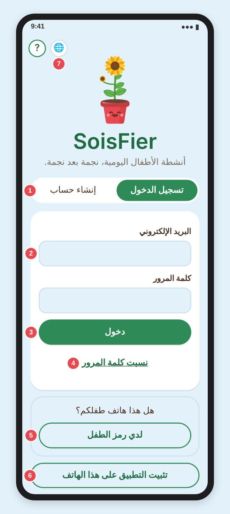
- تسجيل الدخول / إنشاء حساب: للتبديل بين النموذجين.
- البريد الإلكتروني وكلمة المرور: بيانات دخول الوالد.
- دخول: يفتح مساحة الوالدين.
- نسيت كلمة المرور: يرسل رابط إعادة تعيين إلى البريد المُدخَل.
- لدي رمز الطفل: على هاتف الطفل فقط (انظروا الخطوة 4).
- تثبيت التطبيق على هذا الهاتف: يضيف SoisFier إلى الشاشة الرئيسية للهاتف.
- 🌐 اللغة: لاختيار لغة التطبيق على هذا الجهاز (انظروا أدناه).
اختيار اللغة
يظهر الزر 🌐 أعلى كل شاشة، بجانب زر «?» (وبجانب القفل في وضع الطفل). تُطبَّق اللغة المختارة فورًا على هذا الجهاز فقط، وتُستعمل أيضًا للتذكيرات التي يتلقاها. يمكن لكل فرد من العائلة، ولهاتف الطفل، استعمال لغة مختلفة.
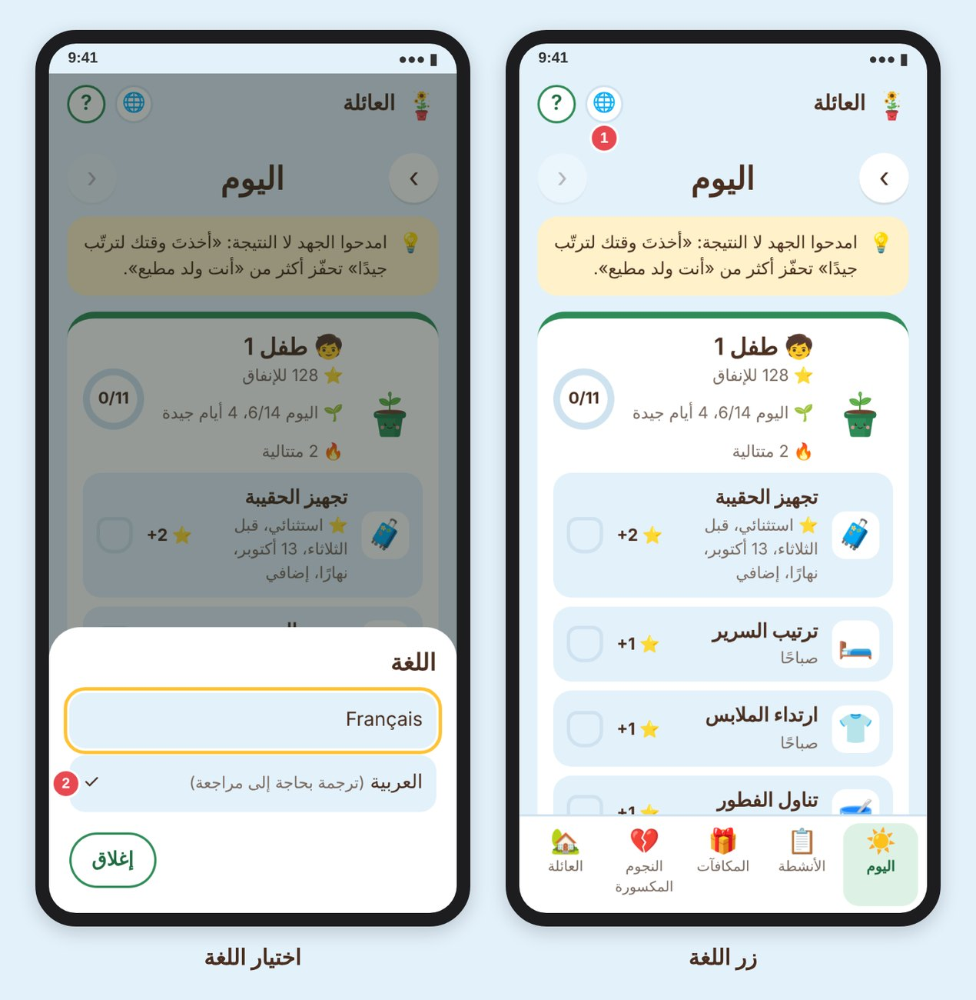
الخطوة 1: تثبيت التطبيق
بعد التثبيت، يُفتح SoisFier كتطبيق، دون شريط العنوان.
- افتحوا https://pyramid85cl209.github.io/SoisFier2/ في Chrome.
- أسفل شاشة البداية، المسوا تثبيت التطبيق على هذا الهاتف (6). إن لم يظهر الزر: قائمة ⋮ في Chrome، ثم إضافة إلى الشاشة الرئيسية.
- في النافذة التي تُفتح، المسوا تثبيت.
- تظهر أيقونة SoisFier على الشاشة الرئيسية للهاتف. افتحوها: هي التي تُستعمل بعد ذلك.

الخطوة 2: إنشاء الحساب
لكل شخص بالغ حسابه الخاص ببريده الإلكتروني. يُنشأ الحساب مرة واحدة فقط.
- المسوا تبويب إنشاء حساب (1).
- أدخلوا الاسم الأول (2) والبريد الإلكتروني (3) وكلمة مرور من 6 أحرف على الأقل (4).
- المسوا إنشاء حسابي (5). تظهر رسالة «تحقّقوا من بريدكم»: المسوا فهمت.
- افتحوا رسالة «Confirm your email address» المرسلة من Supabase Auth (وهي بالإنجليزية) والمسوا الرابط Confirm email address.
- عودوا إلى SoisFier، تبويب تسجيل الدخول، وادخلوا ببريدكم وكلمة المرور.
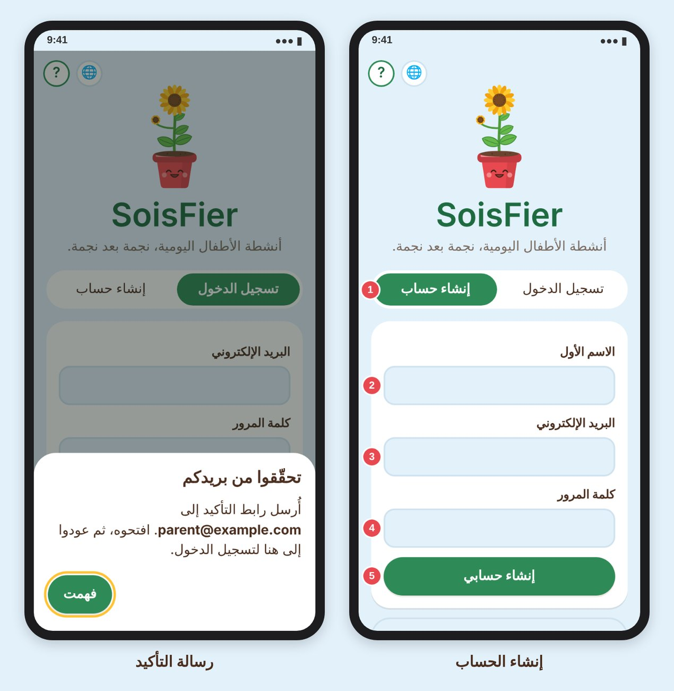
قد يفتح رابط التأكيد صفحة في المتصفّح بدل التطبيق. لا بأس: الحساب مؤكَّد، ويكفي العودة إلى التطبيق لتسجيل الدخول.
الخطوة 3: إنشاء العائلة أو الانضمام إليها
بعد أول تسجيل دخول، تطلب شاشة «أهلًا وسهلًا» إنشاء عائلة أو الانضمام إلى واحدة. ينشئ أحد الوالدين العائلة؛ وينضمّ إليها الآخرون برمز.
الوالد الأول: إنشاء العائلة
- أدخلوا اسم العائلة (1).
- في أنا (2)، اختاروا صلتكم بالأطفال: بابا، ماما، جدّو، تيتة، عمّو، خالو، عمّتو، خالتو أو المربّية.
- تحقّقوا من إعدادات الأسبوع (3): يقترح التطبيق أول يوم في الأسبوع وأيام العطلة والمنطقة الزمنية حسب الهاتف. المسوا تعديل لتغييرها (انظروا أدناه).
- المسوا إنشاء (4).
الأفراد الآخرون: الانضمام إلى العائلة
- اطلبوا رمز دعوة من أحد الوالدين. ينشئه من العائلة > دعوة فرد، مع اختيار صلتكم وصلاحياتكم (وليّ أمر أو قريب). الرمز صالح لمدة 48 ساعة.
- أدخلوا رمز الدعوة المكوّن من 6 أحرف (5) والمسوا انضمام (6).
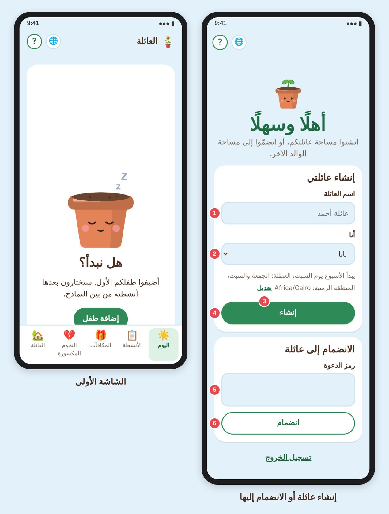
الأسبوع والمنطقة الزمنية
تحدّد هذه الإعدادات ترتيب الأيام، وخيارَي «أيام الأسبوع» و«عطلة نهاية الأسبوع»، وأوسمة الأسبوع والعطلة، ونهاية فترات الحديقة، وساعة بداية اليوم الجديد (التأكيد التلقائي والتذكيرات).
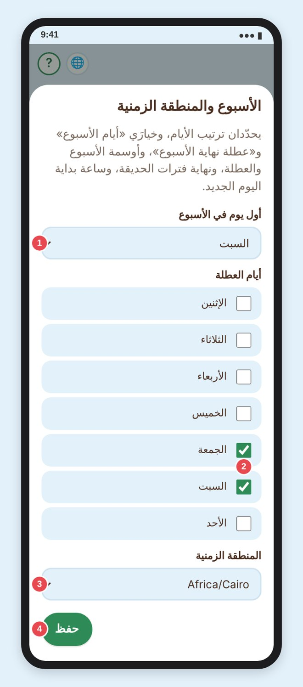
- أول يوم في الأسبوع: مثلًا السبت أو الأحد أو الإثنين.
- أيام العطلة: حتى 3 أيام، مثلًا الجمعة والسبت.
- المنطقة الزمنية: مثلًا Africa/Cairo أو Asia/Riyadh.
- حفظ.
يمكن تغييرها لاحقًا من العائلة > الأسبوع والمنطقة الزمنية (الجزء 5).
الخطوة 4: الإعدادات الأولى
تدعو الشاشة الأولى «هل نبدأ؟» إلى إضافة طفل. تتيح التبويبات الخمسة في الأسفل (اليوم، الأنشطة، المكافآت، النجوم المكسورة، العائلة) الوصول إلى كل شيء.
- ☐ إضافة طفل: الاسم الأول والصورة الرمزية ولون أصيصه. يُحفظ الاسم الأول فقط.
- ☐ اختيار أنشطته من النماذج (صباحًا، ظهرًا، مساءً)، ثم ضبط الأيام والنجوم.
- ☐ إضافة مكافآت من القائمة: تُحسب الأسعار حسب وتيرة الطفل.
- ☐ دعوة الوالد الآخر والأقارب: العائلة > دعوة فرد.
- ☐ تفعيل التذكيرات: العائلة > التذكيرات، ثم السماح بالإشعارات.
- ☐ إنشاء رمز الوالدين من 4 أرقام: يحمي الخروج من وضع الطفل.
ربط هاتف الطفل
- على هاتف أحد الوالدين: العائلة، ثم ربط جهازه بجانب اسم الطفل. يظهر رمز من 6 أحرف صالح لمدة 15 دقيقة.
- على هاتف الطفل: ثبّتوا التطبيق (الخطوة 1)، والمسوا لدي رمز الطفل، وأدخلوا الرمز (1) ثم ربط هذا الهاتف (2). لا يحتاج الطفل إلى حساب.
إن كان الطفل يستعمل هاتف أحد الوالدين، استعملوا بدلًا من ذلك وضع الطفل هنا في العائلة: لا حاجة إلى رمز.
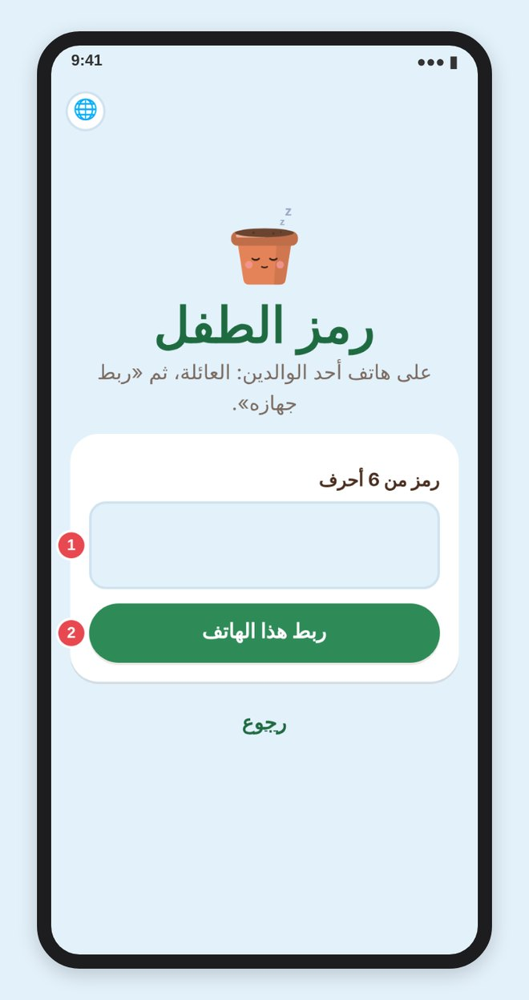
عند حدوث مشكلة
| المشكلة | الحل |
|---|---|
| لم نجد بريد التأكيد | تحقّقوا من البريد المزعج وابحثوا عن «Supabase Auth». انتظروا بضع دقائق قبل إعادة إنشاء الحساب. |
| «البريد الإلكتروني أو كلمة المرور غير صحيحة» | تحقّقوا من العنوان، وإلا فالمسوا نسيت كلمة المرور في شاشة الدخول. |
| «أكّدوا بريدكم الإلكتروني أولًا» | افتحوا الرابط في بريد Supabase Auth، ثم سجّلوا الدخول من جديد. |
| رمز الدعوة أو رمز الطفل مرفوض | انتهت صلاحية الرمز (48 ساعة للدعوة، 15 دقيقة للطفل): أنشئوا رمزًا جديدًا. |
| زر التثبيت لا يظهر | قائمة ⋮ في Chrome، ثم إضافة إلى الشاشة الرئيسية. |
| تبقى النسخة القديمة ظاهرة بعد التحديث | أغلقوا التطبيق تمامًا ثم أعيدوا فتحه، مرتين. |
| «الإعدادات ناقصة» | الموقع قيد النشر أو منشور بشكل خاطئ: حاولوا لاحقًا وأخبروا المسؤول. |
2أ صفحة العائلة والطفل الأول
يقدّم هذا الجزء صفحة العائلة ويضيف الطفل الأول مع أنشطته، في حوالي 5 دقائق.
وهو يلي الجزء 1: التطبيق مثبّت والحساب منشأ والعائلة موجودة. وحده وليّ الأمر يمكنه إضافة طفل؛ ويرى القريب صفحة العائلة دون هذه الأزرار.
صفحة العائلة
يجمع تبويب العائلة (في الأسفل) الأطفالَ والأفرادَ وكل الإعدادات. الصفحة طويلة: مرّروها للوصول إلى الأقسام السفلية.
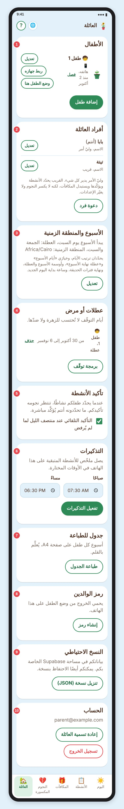
- الأطفال: قائمة الأطفال. إضافة طفل هي أول ما يُفعل.
- أفراد العائلة: كل شخص بالغ مع صلته (بابا، ماما…) وصلاحياته. دعوة فرد ينشئ رمزًا للوالد الآخر أو لقريب.
- الأسبوع والمنطقة الزمنية: أول يوم في الأسبوع وأيام العطلة والمنطقة الزمنية للعائلة.
- عطلات أو مرض: أيام التوقّف لا تُحتسب للزهرة ولا ضدّها.
- تأكيد الأنشطة: الخانة المحدّدة تؤكّد تلقائيًا عند منتصف الليل ما لم يرفضه أحد. اتركوها محدّدة في البداية.
- التذكيرات: اختاروا وقتًا صباحًا ومساءً، ثم المسوا تفعيل التذكيرات واسمحوا بالإشعارات.
- جدول للطباعة: أسبوع كل طفل على صفحة A4، يُعلَّم بالقلم.
- رمز الوالدين: 4 أرقام تُطلب للخروج من وضع الطفل على هذا الهاتف.
- النسخ الاحتياطي: ينزّل نسخة من كل بيانات العائلة.
- الحساب: إعادة تسمية العائلة أو تسجيل الخروج.
الخطوة 1: إضافة طفل
يُحفظ الاسم الأول فقط: لا اسم عائلة ولا تاريخ ميلاد.
- المسوا إضافة طفل، في تبويب العائلة أو في شاشة «هل نبدأ؟».
- أدخلوا اسمه الأول (1).
- اختاروا صورة رمزية (2). تظهر بجانب اسمه في كل مكان في التطبيق.
- اختاروا لون أصيصه (3). مع عدة أطفال، يساعد لون مختلف لكل واحد على تمييز نبتاتهم.
- المسوا إضافة (4).
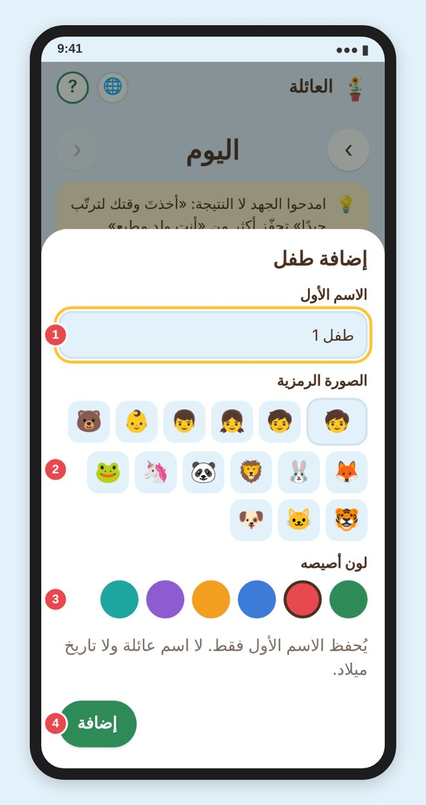
يبقى الاسم والصورة الرمزية واللون قابلة للتعديل: العائلة، ثم تعديل بجانب الطفل.
الخطوة 2: اختيار أنشطته الأولى
بعد الإضافة مباشرة، تُفتح قائمة نماذج الأنشطة الـ22، مرتّبة حسب الوقت: الصباح، الظهر، النهار والمساء.
- مرّروا القائمة وحدّدوا الأنشطة التي تناسب يوم الطفل.
- المسوا إضافة المحدَّد (1)، في أسفل القائمة.
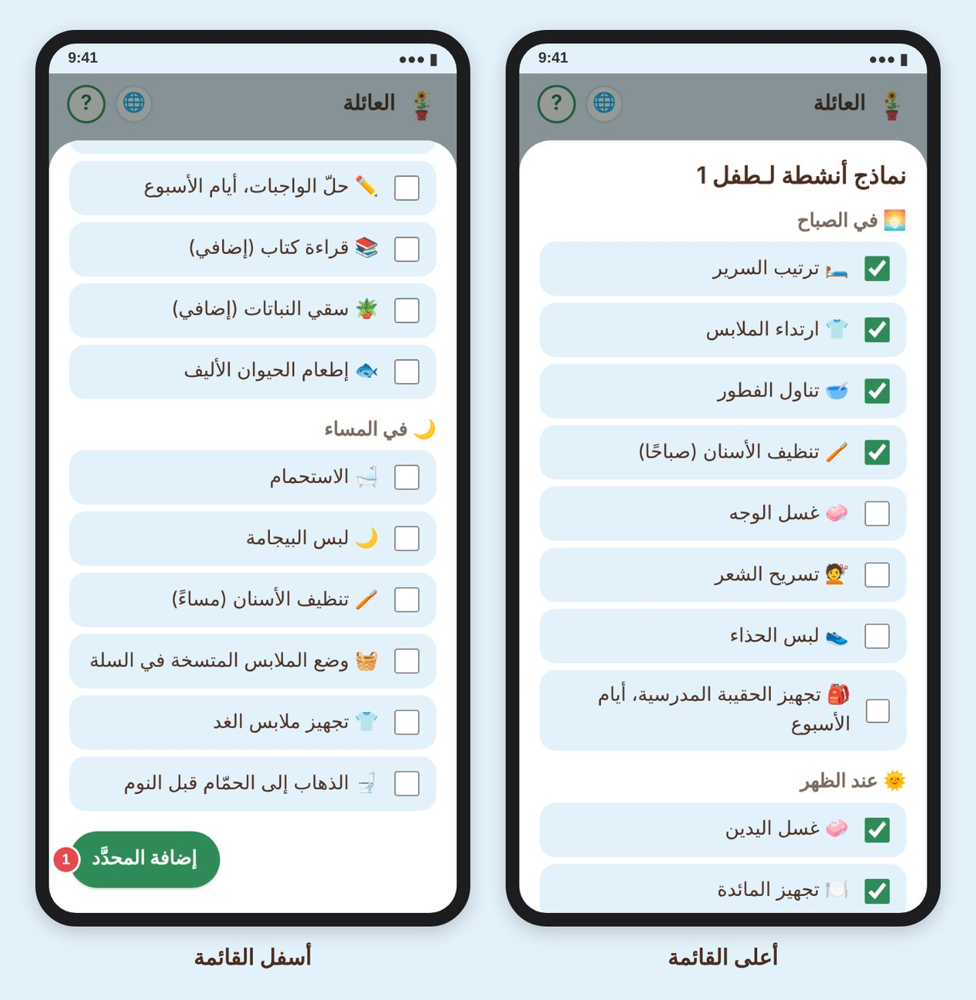
بعض النصائح للاختيار:
- ابدؤوا بالقليل: 3 أو 4 أنشطة لكل فترة تكفي لطفل صغير. يمكنكم إضافة المزيد لاحقًا.
- «أيام الأسبوع»: النشاط مبرمج في أيام المدرسة فقط (الحقيبة، الواجبات)، أي الأيام غير المحدّدة كعطلة.
- «إضافي»: يمنح النشاط نجومًا دون أن يُحتسب في اليوم الجيد. مفيد للتحديات الصغيرة.
- يأتي كل نموذج بنجمة أو نجمتين ومكان. يمكنكم ضبط الأيام والنجوم والمؤقّت لكل نشاط.
وبعد ذلك
يظهر الطفل في تبويب اليوم مع أصيصه وأنشطة اليوم. تبدأ زهرته الأولى في اليوم نفسه وتتفتّح في آخر يوم من الأسبوع يقع بعد 7 أيام على الأقل.
لطفل ثانٍ، أعيدوا هاتين الخطوتين من العائلة > إضافة طفل.
التتمة في الجزء 2ب: تعديل نشاط، وإنشاء نشاط جديد، وضبط الأيام والنجوم والمؤقّت، وإضافة نشاط استثنائي.
2ب الأنشطة
يوضّح هذا الجزء كيفية إضافة أنشطة الطفل وإنشائها وتعديلها وحذفها، وكذلك الأنشطة الاستثنائية.
وهو يلي الجزء 2أ: الطفل موجود ولديه بعض الأنشطة. وحده وليّ الأمر يدير الأنشطة المعتادة؛ أما الأنشطة الاستثنائية فيمكن للقريب إضافتها أيضًا.
تبويب الأنشطة
يعرض تبويب الأنشطة الأنشطة المعتادة للطفل، مرتّبة حسب الوقت، ثم الأنشطة الاستثنائية أسفل الصفحة.
ما دام الطفل بلا أنشطة، يعرض التبويب رسالة تدعو إلى اختيار ثلاثة أو أربعة من النماذج. ابدؤوا بـاختيار نماذج (1).
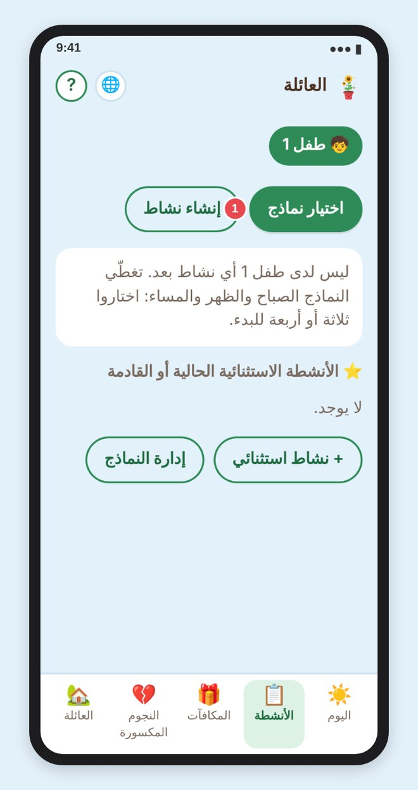
بعد إضافة الأنشطة، يظهر التبويب هكذا:
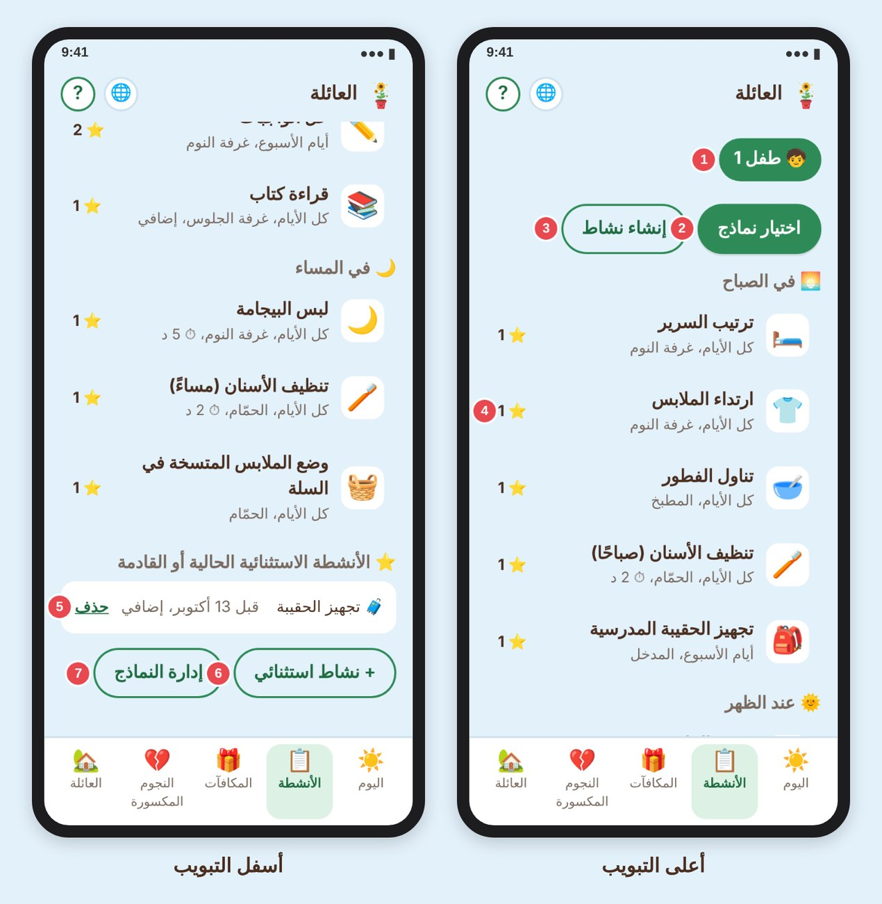
- الطفل المختار: مع عدة أطفال، المسوا اسمه للتنقّل بينهم.
- اختيار نماذج: يضيف أنشطة جاهزة.
- إنشاء نشاط: نشاط على المقاس.
- نشاط: المسوه لتعديله أو حذفه. تحت اسمه: الأيام والمكان والمؤقّت؛ وعلى الجانب: نجومه.
- الأنشطة الاستثنائية الحالية أو القادمة: مع تاريخها ونوعها ورابط حذف.
- + نشاط استثنائي: مهمة لمرة واحدة.
- إدارة النماذج: الأنشطة الاستثنائية المحفوظة كنماذج.
إضافة نماذج أخرى
تبقى النماذج متاحة بعد الاختيار الأول لإكمال يوم الطفل.
- المسوا اختيار نماذج.
- تظهر الأنشطة المضافة مسبقًا باهتة مع عبارة «مُضاف مسبقًا» (1): لا يمكن إضافتها مرتين.
- حدّدوا الأنشطة الجديدة، ثم المسوا إضافة المحدَّد (2) أسفل القائمة.
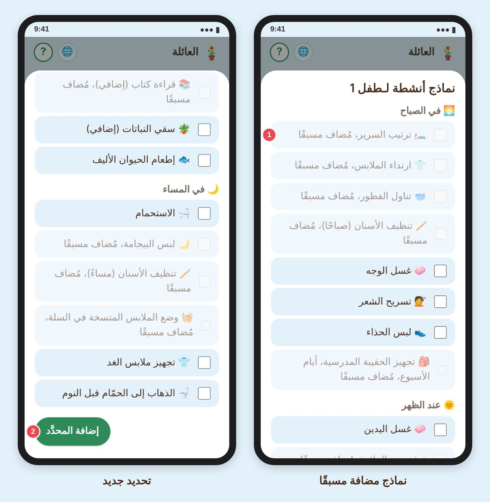
إنشاء نشاط
المسوا إنشاء نشاط لنشاط غير موجود في النماذج، مثلًا «تمرين كرة القدم».
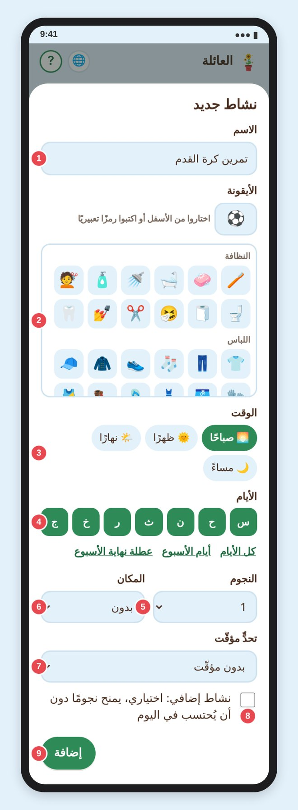
- الاسم: قصير وملموس، سيقرؤه الطفل كل يوم.
- الأيقونة: اختاروها من القائمة المرتّبة حسب الفئات (مرّروها)، أو اكتبوا رمزًا تعبيريًا في الخانة.
- الوقت: صباحًا أو ظهرًا أو نهارًا أو مساءً. يحدّد المجموعة التي يظهر فيها النشاط.
- الأيام: باللون الأخضر الأيام التي يُبرمج فيها النشاط، بدءًا من أول يوم في أسبوع العائلة. المسوا يومًا لإزالته، أو استعملوا الاختصارات كل الأيام وأيام الأسبوع وعطلة نهاية الأسبوع.
- النجوم: من 1 إلى 5. كلما تطلّب النشاط جهدًا أكبر، منح نجومًا أكثر.
- المكان: اختياري. يظهر تحت الاسم ليساعد الطفل على التوجّه.
- تحدٍّ مؤقّت: اختياري. مؤقّت من 2 إلى 30 دقيقة يمكن للطفل تشغيله ليجعل النشاط تحدّيًا.
- نشاط إضافي: إذا حُدّد، يمنح النشاط نجومًا لكنه لا يُحتسب في اليوم الجيد.
- إضافة: يظهر النشاط في تبويب الأنشطة وفي يوم الطفل.
تعديل نشاط أو حذفه
- في تبويب الأنشطة، المسوا النشاط. يُفتح نموذج تعديل النشاط معبّأً.
- غيّروا ما يلزم: الاسم، الأيقونة، الوقت، الأيام، النجوم، المكان، المؤقّت أو «إضافي».
- أسفل النموذج، المسوا حفظ (2)، أو حذف (1) لإزالة النشاط، ثم أكّدوا.
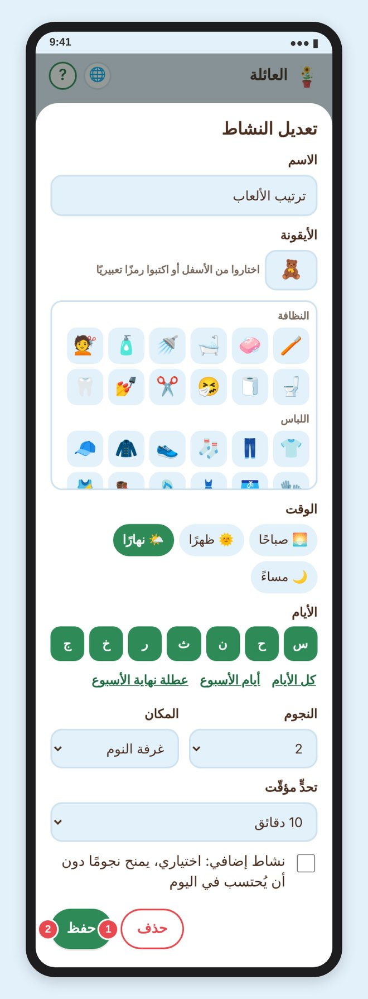
حذف النشاط يزيله من الأيام القادمة. تبقى النجوم المكتسبة به، ولا تتراجع النبتة.
إضافة نشاط استثنائي
النشاط الاستثنائي مهمة لمرة واحدة: في يوم محدّد، أو قبل تاريخ معيّن. يمكن للوالدين والأقارب إضافته، من تبويب الأنشطة أو من بطاقة الطفل في تبويب اليوم.
- المسوا + نشاط استثنائي.
- اختاروا أحد نماذجكم (1)، أو أحد الاقتراحات العشرة، أو المسوا إنشاء نشاط جديد أسفل القائمة.
- أكملوا النموذج:
- الاسم (1) والأيقونة، معبّآن إن انطلقتم من اقتراح.
- متى (2): يوم = ذلك اليوم فقط؛ قبل يوم = يظهر كل يوم حتى يُنجز.
- التاريخ (3).
- النوع (4): إضافي (افتراضيًا) يمنح نجومًا دون أن يُفسد اليوم؛ إلزامي يُحتسب في اليوم الجيد.
- النجوم والوقت (5).
- الاحتفاظ به كنموذج (6): حدّدوه لمهمة ستتكرّر. سيظهر في أعلى القائمة في المرة القادمة.
- المسوا إضافة (7).
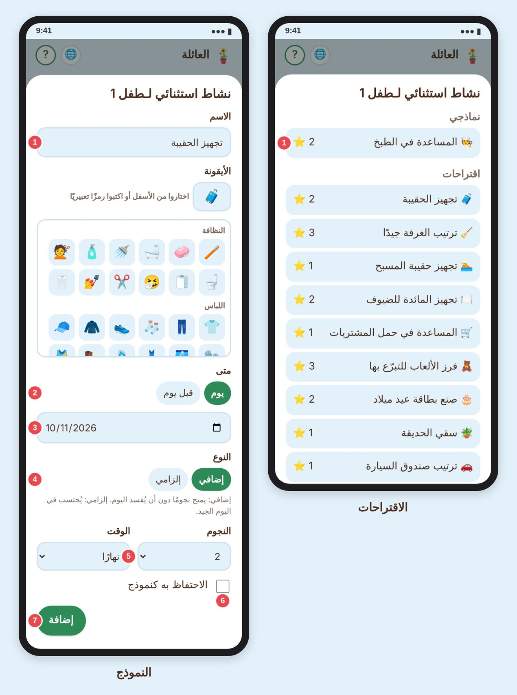
يظهر النشاط في قسم «الأنشطة الاستثنائية الحالية أو القادمة»، ثم يختفي بعد مرور تاريخه. لحذف نموذج لم يعد مفيدًا: إدارة النماذج.
النتيجة في تبويب اليوم
تظهر أنشطة اليوم في تبويب اليوم، على بطاقة الطفل. يشير العدّاد (1) إلى الأنشطة المنجزة من المجموع (هنا 0/11)، ويشير السطر تحت الاسم (2) إلى تقدّم الزهرة.
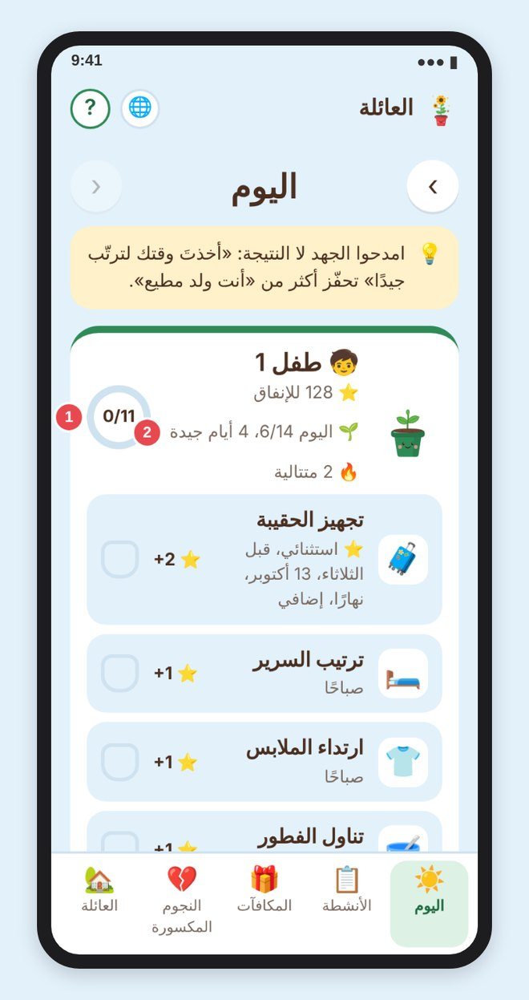
التتمة في الجزء 2ج: المكافآت والنجوم المكسورة.
2ج المكافآت والنجوم المكسورة
يحدّد تبويب المكافآت ما يمكن للطفل الحصول عليه بنجومه. تُحسب الأسعار تلقائيًا حسب وتيرته. يلي هذا الجزء الجزأين 2أ (إنشاء الطفل) و2ب (إنشاء الأنشطة): بلا أنشطة تكون الوتيرة صفرًا ولا يمكن حساب أي سعر.
مبدأ السعر: مدة الجهد × الوتيرة. الوتيرة هي متوسط النجوم التي يكسبها الطفل يوميًا، أي 75% من النجوم المبرمجة في الأسبوع مقسومة على 7. مع وتيرة 11.4 ⭐ يوميًا، تكلّف مكافأة ليوم واحد تقريبًا 11 ⭐ ومكافأة لشهر تقريبًا 340 ⭐. يُقرَّب السعر ثم يُثبَّت عند الإنشاء؛ ولا يتغيّر إذا تغيّرت الأنشطة بعد ذلك.
تبويب المكافآت
افتحوا تبويب المكافآت في الشريط السفلي. يعرض رصيد النجوم القابلة للإنفاق لدى الطفل المختار ووتيرته.
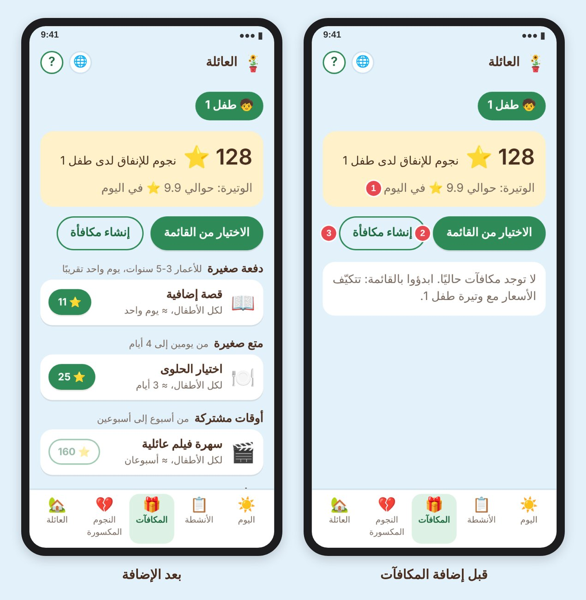
- الوتيرة: متوسط النجوم المكتسبة يوميًا (هنا حوالي 11.4). هي أساس كل الأسعار.
- الاختيار من القائمة: الأسرع للبدء.
- إنشاء مكافأة: مكافأة خاصة بكم.
بعد التعبئة، ترتَّب القائمة حسب المستوى، من الأرخص إلى الأغلى. تشير كل بطاقة إلى من تخصّه ومدة الجهد التقريبية والسعر. وتعرض المناسبة تاريخها أيضًا.
الاختيار من القائمة
تقترح القائمة مكافآت جاهزة مرتّبة في ستة مستويات. الأسعار المعروضة محسوبة مسبقًا لكل طفل.
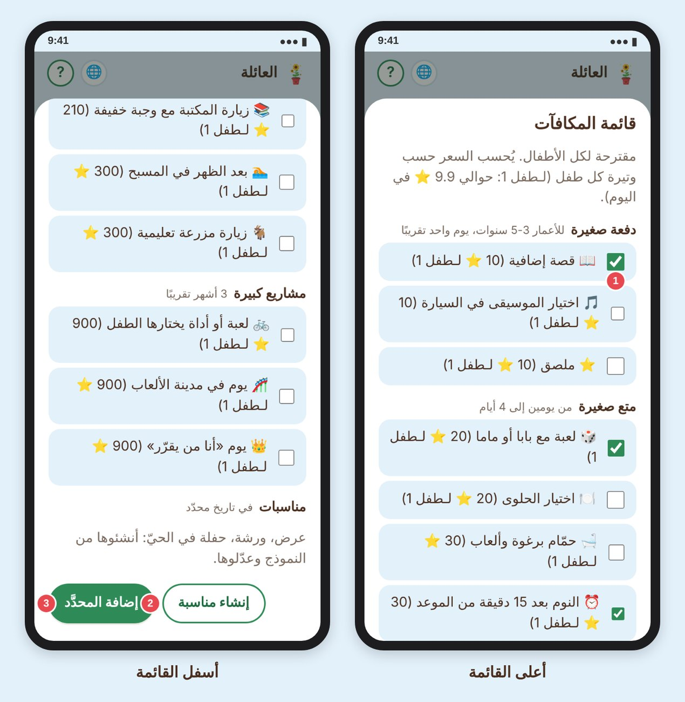
- حدّدوا المكافآت التي تناسبكم، في كل المستويات.
- إنشاء مناسبة يفتح نموذج المناسبة معبّأً مسبقًا.
- إضافة المحدَّد يضيف دفعة واحدة كل ما حُدّد. المكافآت المضافة لكل الأطفال، كلٌّ بسعره.
| المستوى | مدة الجهد | مثال (وتيرة 11.4) |
|---|---|---|
| دفعة صغيرة | يوم واحد تقريبًا، للأعمار 3-5 سنوات | قصة إضافية: 11 ⭐ |
| متع صغيرة | من يومين إلى 4 أيام | اختيار الحلوى: 25 ⭐ |
| أوقات مشتركة | من أسبوع إلى أسبوعين | سهرة فيلم عائلية: 160 ⭐ |
| نزهات | شهر تقريبًا | زيارة مزرعة تعليمية: 340 ⭐ |
| مشاريع كبيرة | 3 أشهر تقريبًا | لعبة أو أداة يختارها الطفل: 1000 ⭐ |
| مناسبات | في تاريخ محدّد | عرض أو ورشة: تُنشأ يدويًا |
يمكنكم العودة إلى القائمة في أي وقت لإضافة المزيد.
إنشاء مكافأة أو مناسبة
النموذج نفسه للمكافأة وللمناسبة. يتغيّر المستوى فقط: المناسبة مكافأة من مستوى «مناسبات» مع تاريخ.
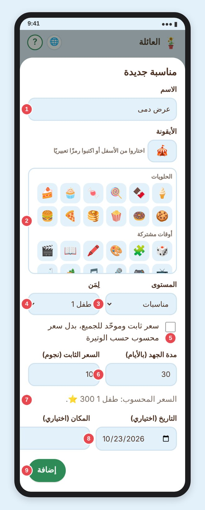
- الاسم: ما سيراه الطفل، مثلًا «عرض دمى».
- الأيقونة: المسوا أيقونة في الشبكة أو اكتبوا رمزًا تعبيريًا.
- المستوى: من «دفعة صغيرة» إلى «مناسبات». يُستعمل للترتيب ويقترح مدة افتراضية.
- لِمَن: الطفل المعني.
- سعر ثابت: حدّدوا هذه الخانة لسعر موحّد للجميع بدل سعر محسوب حسب الوتيرة.
- مدة الجهد (بالأيام) إن لم تُحدَّد الخانة، أو السعر الثابت (نجوم) إن حُدّدت. يُحتسب حقل واحد فقط.
- السعر المحسوب: معاينة السعر لكل طفل. هنا 30 يومًا × 11.4 ⭐، مقرّبًا إلى 340 ⭐.
- التاريخ والمكان: اختياريان. للمناسبة، ضعوا التاريخ؛ يظهر على البطاقة.
- إضافة يحفظ المكافأة في القائمة.
نصيحة: للمناسبة، اختاروا مدة تترك للطفل وقتًا ليدّخر قبل التاريخ. عرض بعد 10 أيام ≈ 10 أيام من الجهد.
النجوم المكسورة
تسحب النجمة المكسورة من 1 إلى 3 نجوم من الرصيد القابل للإنفاق بسبب تصرّف فوري. لا ينزل الرصيد أبدًا تحت الصفر، ولا تتأثّر النبتة ولا الأوسمة. وحده وليّ الأمر يمكنه كسر نجمة.
تبويب النجوم المكسورة
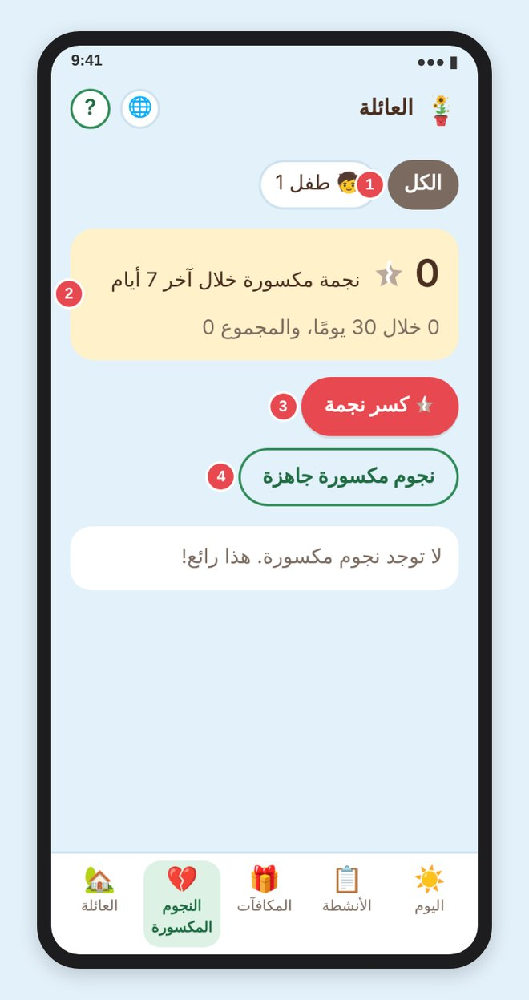
- الكل / الطفل: يصفّي السجلّ. تُطبَّق النجمة المكسورة على الطفل المختار.
- العدّاد: النجوم المكسورة خلال 7 أيام وخلال 30 يومًا والمجموع.
- كسر نجمة: يطبّق نجمة مكسورة.
- نجوم مكسورة جاهزة: القائمة المشتركة بين الوالدين.
إن لم يكن لدى الطفل أي نجمة للإنفاق، يشير التطبيق إلى ذلك: لا شيء يُكسر.
تحضير الأسباب الجاهزة
الأسباب الجاهزة صالحة لكل الأطفال. تضمن أن التصرّف نفسه يكلّف الشيء نفسه أيًّا كان الوالد. افعلوا ذلك مرة واحدة قبل أول نجمة مكسورة.
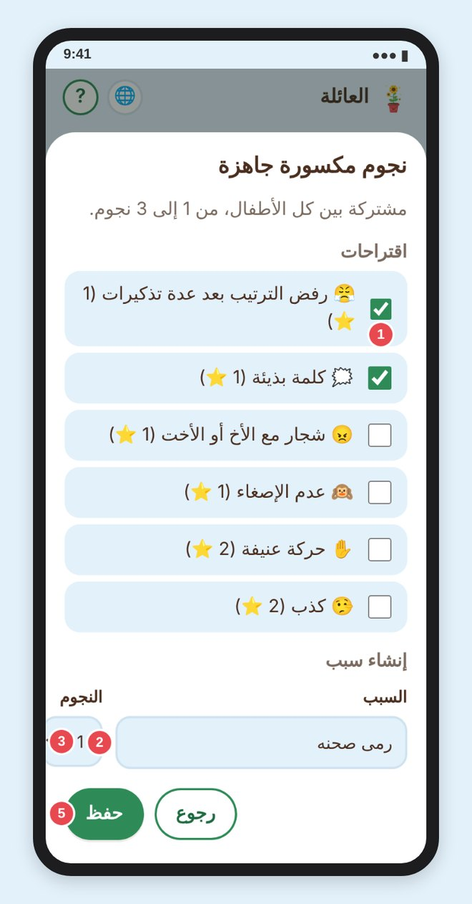
- حدّدوا الاقتراحات التي تناسبكم.
- السبب: لسبب خاص بكم، اكتبوه هنا.
- النجوم: اختاروا 1 أو 2 أو 3.
- رجوع يعود إلى نافذة «كسر نجمة» دون حفظ.
- حفظ يضيف دفعة واحدة الخانات المحدّدة والسبب المكتوب.
تنتقل الأسباب المحفوظة إلى أعلى القائمة مع رابط حذف. يأخذ السبب المكتوب يدويًا أيقونة القلب المكسور.
| الاقتراح | النجوم |
|---|---|
| رفض الترتيب بعد عدة تذكيرات | 1 |
| كلمة بذيئة | 1 |
| شجار مع الأخ أو الأخت | 1 |
| عدم الإصغاء | 1 |
| حركة عنيفة | 2 |
| كذب | 2 |
كسر نجمة
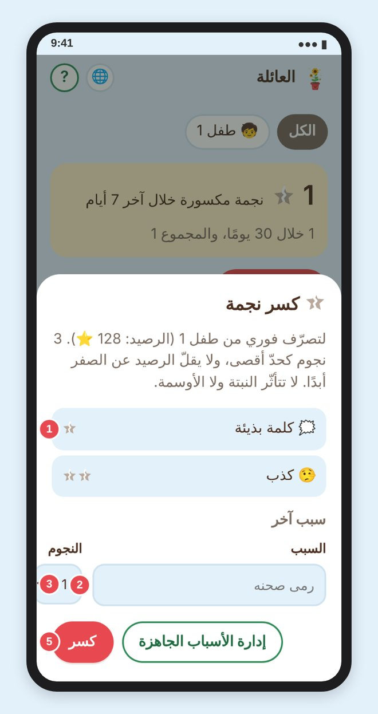
- المسوا سببًا جاهزًا: يُطبَّق فورًا دون تأكيد آخر.
- سبب آخر: لحالة غير متوقّعة، اكتبوا السبب.
- النجوم: 1 أو 2 أو 3.
- إدارة الأسباب الجاهزة يفتح القائمة المشتركة.
- كسر يطبّق السبب الآخر.
يذكّر النص أعلى النافذة برصيد الطفل الحالي.
السجلّ والإلغاء
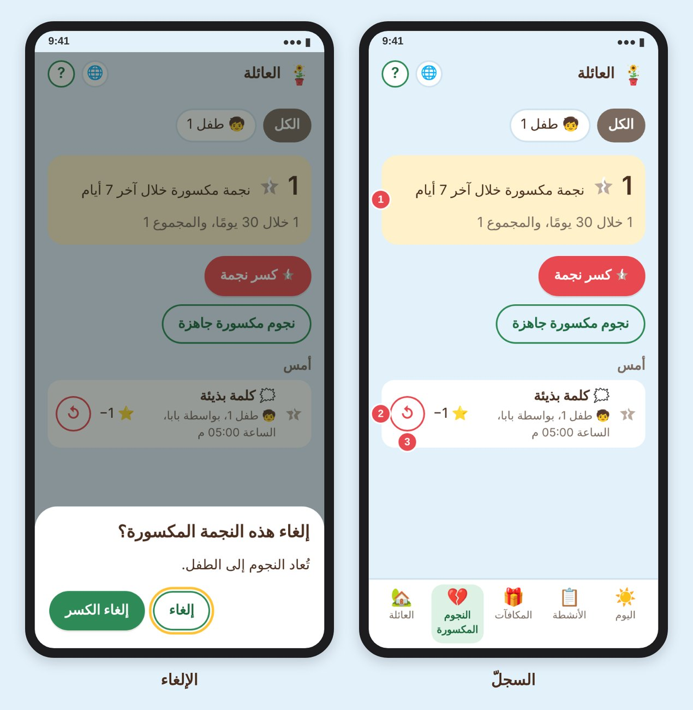
- يتحدّث العدّاد.
- السجلّ مرتّب حسب اليوم، من الأحدث إلى الأقدم. يشير كل سطر إلى السبب والطفل والوالد الذي كسر النجمة والساعة وعدد النجوم.
- الإلغاء (السهم الدائري): بعد التأكيد، تُعاد النجوم إلى الطفل. مفيد عند الخطأ في الطفل أو في السبب.
2د الأفراد وهاتف الطفل
يُستعمل تبويب العائلة لدعوة الكبار الذين يتابعون الطفل ولربط هاتفه. يلي هذا الجزء الجزء 2أ (إنشاء الطفل).
هناك مستويان من الصلاحيات:
| الصلاحيات | ما يمكنه فعله |
|---|---|
| وليّ أمر | كل شيء: الأنشطة، المكافآت، النجوم المكسورة، الأفراد، الهواتف، الإعدادات. |
| قريب | تحديد الأنشطة وتأكيدها، استبدال المكافآت. لا يكسر النجوم ولا يغيّر الإعدادات. |
يحتفظ كل تأكيد باسم الشخص الذي قام به، فيُعرف من أكّد ماذا.
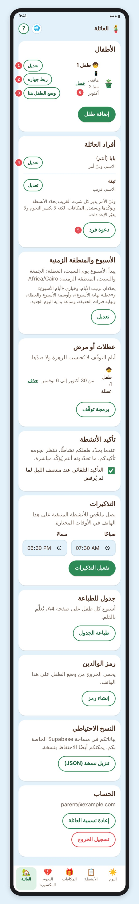
- تعديل الطفل.
- ربط جهازه: هاتف الطفل.
- وضع الطفل هنا: ينتقل هاتفكم إلى وضع الطفل.
- تعديل فرد.
- دعوة فرد.
- فصل: يظهر تحت الطفل لكل هاتف مربوط.
دعوة فرد
تتمّ الدعوة برمز من 6 أحرف صالح لمدة 48 ساعة. وحده وليّ الأمر يمكنه الدعوة.
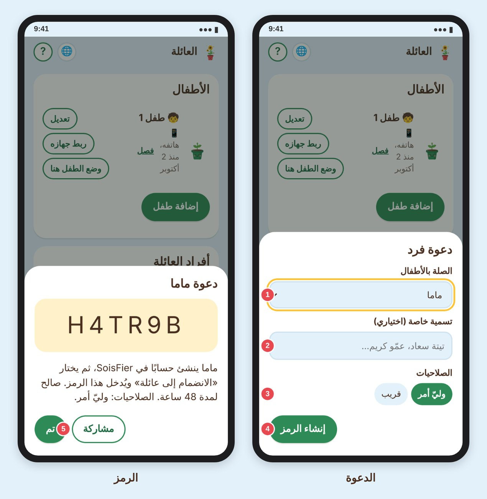
- الصلة بالأطفال: بابا، ماما، جدّو، تيتة، عمّو، خالو، عمّتو، خالتو، المربّية أو أخرى.
- تسمية خاصة (اختياري): الاسم المعروض، مثلًا «تيتة سعاد». مفيد إن كانت هناك جدّتان.
- الصلاحيات: وليّ أمر أو قريب (انظروا الجدول أعلاه).
- إنشاء الرمز يعرض رمز الدعوة.
- مشاركة يرسل الرمز برسالة أو واتساب أو بريد. وإلا فأملوه.
إن انتهت صلاحية الرمز قبل استعماله، أنشئوا رمزًا جديدًا ببساطة.
من جهة المدعوّ: الانضمام إلى العائلة
يقوم الشخص المدعو بهذه الخطوات على هاتفه.
- يثبّت SoisFier وينشئ حسابه كما في الجزء 1.
- في شاشة أهلًا وسهلًا، يتجاهل «إنشاء عائلتي» وينزل إلى الانضمام إلى عائلة (انظروا صورة الخطوة 3 في الجزء 1).
- يُدخل رمز الدعوة ثم يلمس انضمام.
- يصل إلى شاشة اليوم، والأطفال والأنشطة في مكانها. تُطبَّق الصلة والصلاحيات المختارة عند الدعوة تلقائيًا.
انتبهوا: لا تنشئوا عائلة ثانية بالخطأ. لن تكون الأطفال والأنشطة مشتركة.
تعديل فرد أو إزالته
المسوا تعديل بجانب الفرد. يمكن لكل شخص تغيير صلته وتسميته. أما الصلاحيات وإزالة فرد آخر فخاصة بوليّ الأمر.
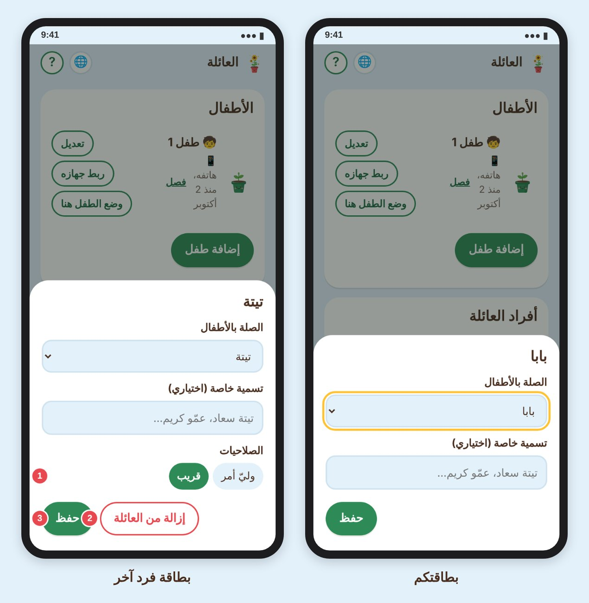
- الصلاحيات: نقل فرد من وليّ أمر إلى قريب، أو العكس.
- إزالة من العائلة: بعد التأكيد، لا يعود للشخص وصول إلى العائلة. يبقى سجلّ تأكيداته محفوظًا.
- حفظ يثبّت التغييرات.
في بطاقتكم لا توجد صلاحيات ولا إزالة: لا يمكن لوليّ الأمر أن يخفّض صلاحياته أو يزيل نفسه بالخطأ.
ربط هاتف الطفل
ليس للطفل حساب ولا بريد إلكتروني: يُربط هاتفه برمز يُستعمل مرة واحدة، صالح لمدة 15 دقيقة.
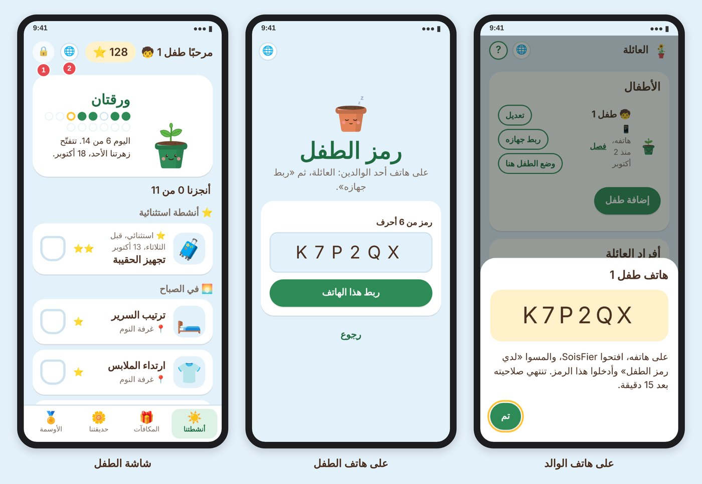
- على هاتفكم: العائلة، ثم ربط جهازه تحت الطفل. يظهر رمز من 6 أحرف.
- على هاتف الطفل: افتحوا SoisFier والمسوا لدي رمز الطفل في شاشة الدخول (انظروا الجزء 1).
- أدخلوا الرمز ثم المسوا ربط هذا الهاتف.
- يصل الطفل إلى شاشته: اسمه ونجومه وأصيصه وأنشطة اليوم. يتيح القفل (1) لأحد الوالدين فصل هذا الهاتف. ويتيح الزر 🌐 (2) اختيار لغة هذا الهاتف.
- على هاتفكم، المسوا تم. يظهر الهاتف تحت الطفل في صفحة العائلة.
لإزالة هاتف (ضائع، مستبدل، تجربة قديمة): فصل في سطره، ثم أكّدوا. سيلزم رمز جديد لإعادة ربطه.
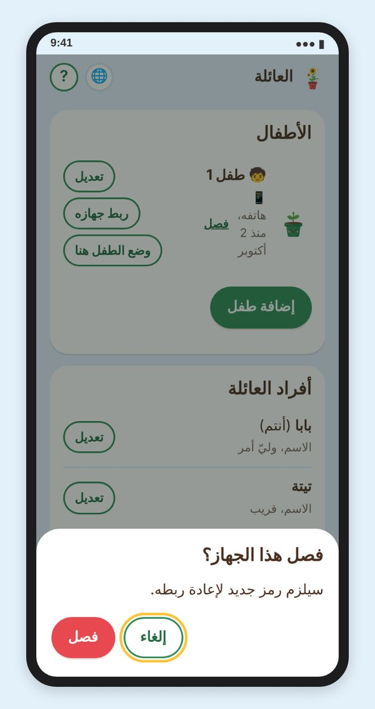
وضع الطفل على هاتفكم
لطفل بلا هاتف، يمكن لهاتفكم أن ينتقل إلى وضع الطفل ريثما يحدّد أنشطته.
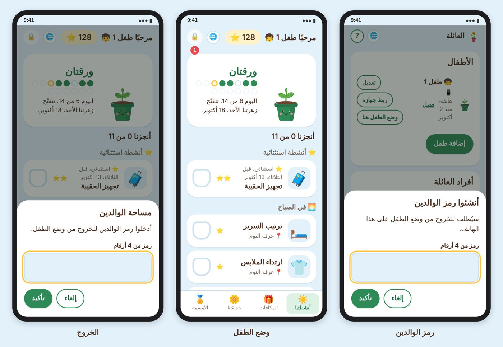
- العائلة، ثم وضع الطفل هنا تحت الطفل.
- في المرة الأولى، أنشئوا رمز الوالدين من 4 أرقام. سيُطلب للخروج من وضع الطفل على هذا الهاتف؛ لا تعطوه للطفل.
- تظهر شاشة الطفل كما على هاتفه.
- للعودة إلى مساحة الوالدين، المسوا القفل (1) ثم أدخلوا رمز الوالدين.
يظهر الهاتف تحت الطفل باسم «هاتف بابا (وضع الطفل)». العودة إلى وضع الطفل تعيد استعمال السطر نفسه دون إنشاء سطر جديد.
تعديل طفل
المسوا تعديل تحت الطفل لتغيير اسمه أو صورته الرمزية أو لون أصيصه.
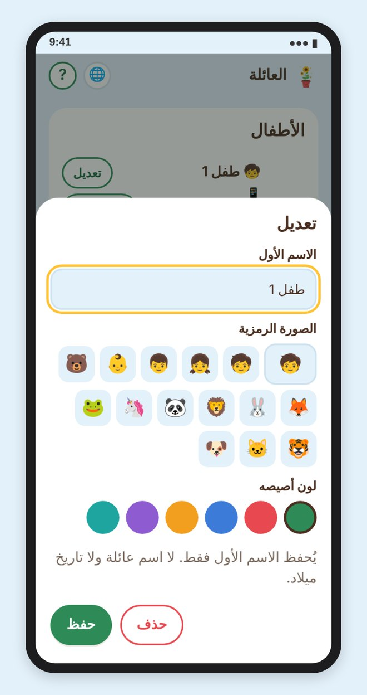
يُحفظ الاسم الأول فقط: لا اسم عائلة ولا تاريخ ميلاد. حذف يمحو الطفل مع أنشطته ونجومه وحديقته. يُستعمل فقط لطفل أُنشئ بالخطأ.
3 يوميات الوالدين
يوميًا، يقوم الوالد بثلاث حركات: تحديد الأنشطة أو تأكيدها، واستبدال المكافآت، وعند الحاجة برمجة توقّف. كل ذلك من تبويبي اليوم والمكافآت؛ والنجوم المكسورة في الجزء 2ج.
القاعدة التي يجب تذكّرها: لا تُحتسب النجمة إلا بعد تأكيدها من أحد الكبار. ما لم يُرفض يُؤكَّد تلقائيًا عند منتصف الليل، حسب المنطقة الزمنية للعائلة.
شاشة اليوم
هي شاشة الافتتاح. تعرض لكل طفل الأنشطة المبرمجة في ذلك اليوم.
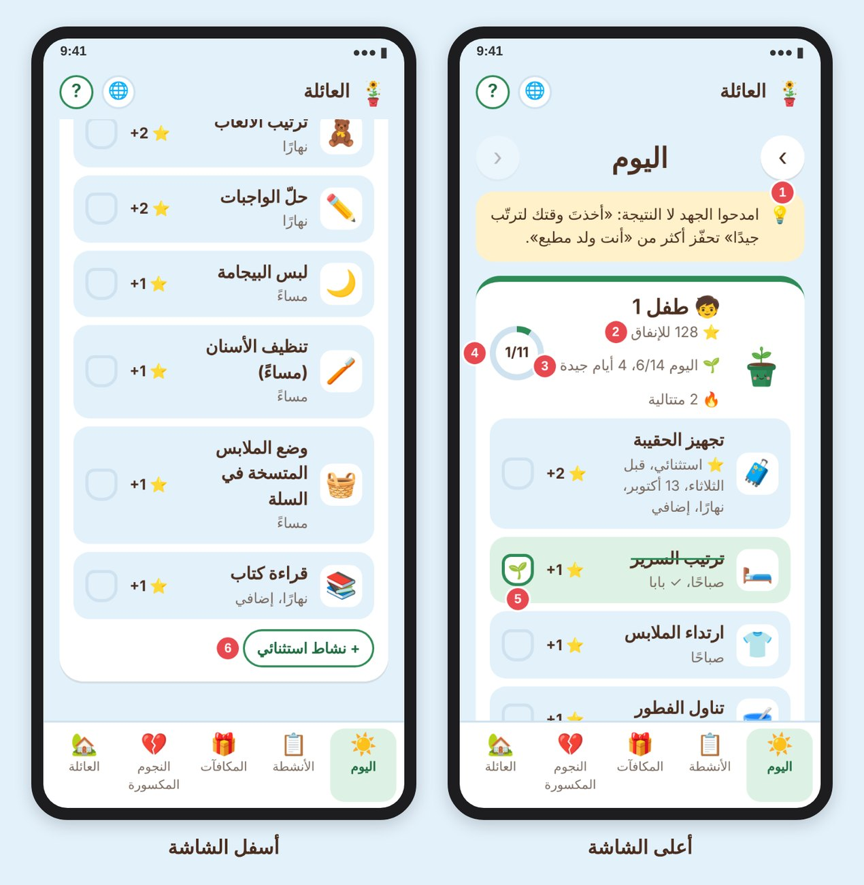
- الأسهم: العودة حتى 6 أيام إلى الوراء لتحديد نشاط منسيّ. لا يمكن الذهاب إلى المستقبل.
- للإنفاق: رصيد نجوم الطفل.
- اليوم 6/14، 4 أيام جيدة: تقدّم الزهرة الحالية وعدد أيامها الجيدة.
- العدّاد: الأنشطة المنجزة من مجموع اليوم.
- خانة التحديد لكل نشاط.
- + نشاط استثنائي: يضيف نشاطًا لمرة واحدة (الجزء 2ب).
يقدّم شريط المصباح نصيحة يومية مختلفة. لا يظهر إلا في اليوم الحالي.
تحديد الأنشطة وتأكيدها
كل شيء يتوقّف على من يحدّد:
| من يحدّد | ماذا يحدث |
|---|---|
| أحد الكبار، من شاشة اليوم | يُؤكَّد النشاط فورًا: يصبح أخضر مع «✓ بابا». |
| الطفل، من هاتفه أو من وضع الطفل | ينتقل النشاط إلى قسم بانتظار التأكيد أعلى شاشة اليوم. |
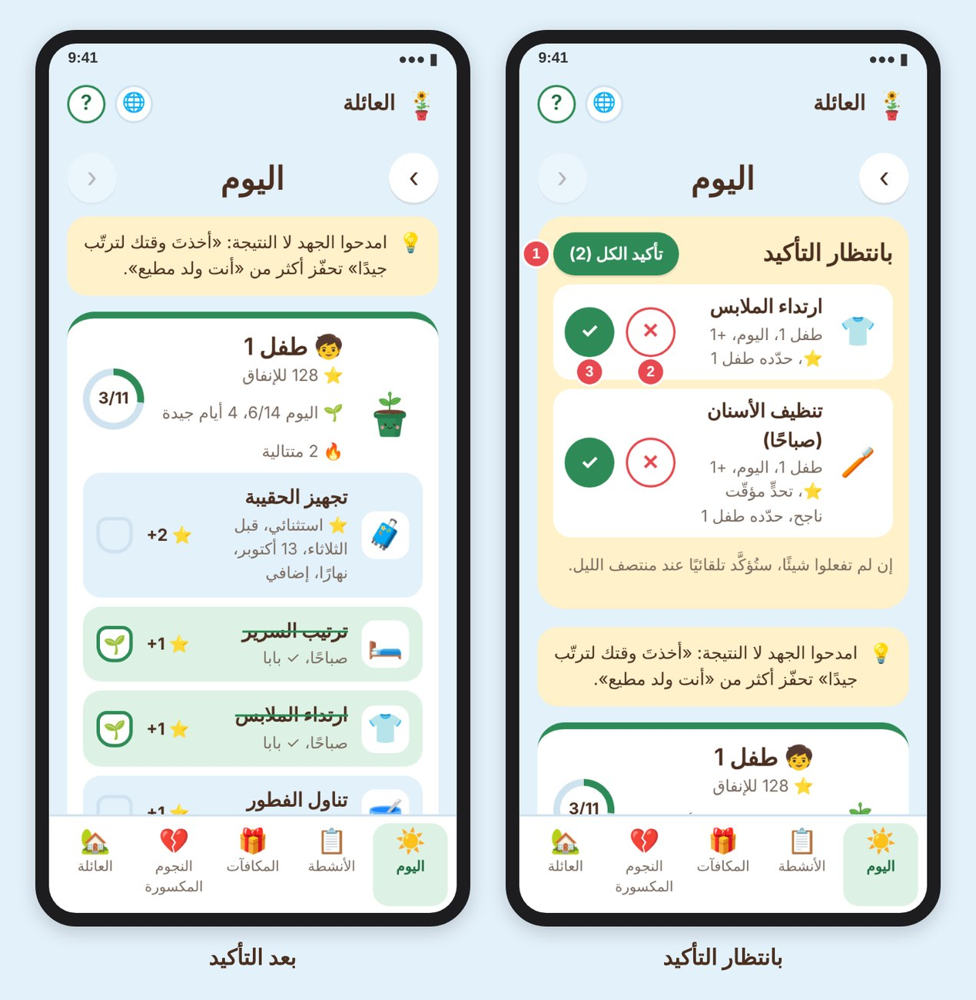
- تأكيد الكل يؤكّد دفعة واحدة كل الأنشطة المنتظرة.
- رفض (علامة ✕): يُعاد النشاط دون عقوبة. لا تُمنح النجوم.
- تأكيد (علامة ✓): تُضاف النجوم إلى الرصيد وتُحتسب للزهرة.
يشير كل سطر إلى الطفل واليوم والنجوم ومن حدّد النشاط. إن لم تفعلوا شيئًا، يُؤكَّد كل ما تبقّى تلقائيًا عند منتصف الليل.
حدّدتم بالخطأ؟ المسوا الخانة من جديد خلال 5 دقائق لإلغاء التحديد. بعد ذلك يصبح النشاط مؤكَّدًا نهائيًا؛ ولسحب نجوم يجب استعمال نجمة مكسورة.
استبدال مكافأة
حين يملك الطفل ما يكفي من النجوم، يتمّ الاستبدال من تبويب المكافآت، مع اختيار الطفل في الأعلى إن كان هناك أكثر من طفل.
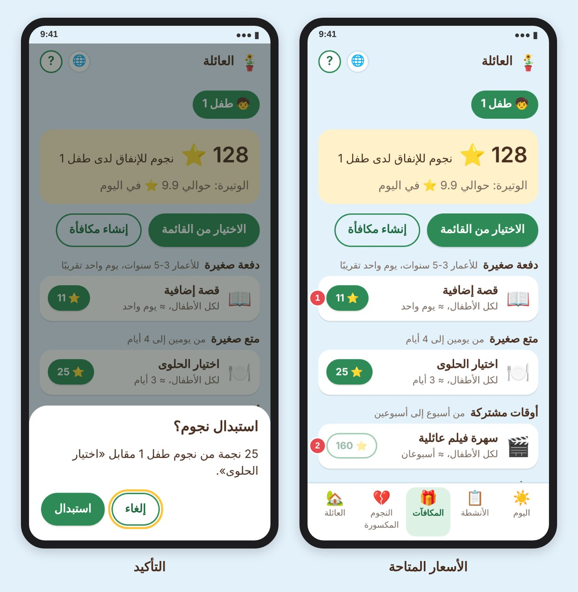
- السعر بالأخضر الممتلئ: لدى الطفل ما يكفي من النجوم. المسوا السعر للاستبدال.
- السعر بإطار فاتح: النجوم غير كافية بعد، والزر لا يفعل شيئًا.
أكّدوا بـاستبدال: يُسحب السعر من الرصيد وتظهر رسالة «تم استبدال المكافأة». تبقى المكافأة في القائمة ويمكن استبدالها لاحقًا من جديد.
يمكن للطفل أيضًا أن يستبدل بنفسه من هاتفه (الجزء 4).
يُسجَّل كل استبدال في السجلّ أسفل تبويب المكافآت، مع التاريخ والسعر ومن قام به. يمكن لوليّ الأمر إلغاؤه (1) من هذه القائمة: بعد التأكيد، تُعاد النجوم إلى الطفل.
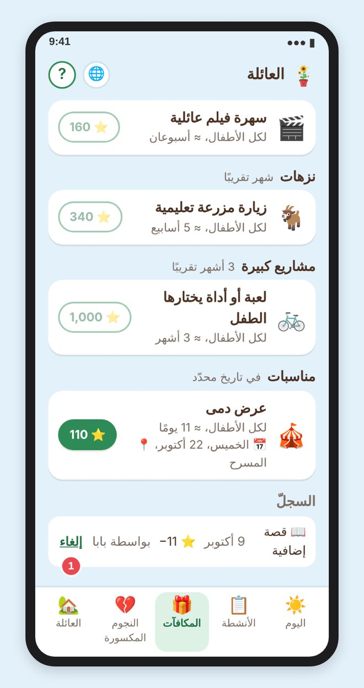
لمس بطاقة مكافأة (خارج السعر) يفتح بطاقتها لتعديلها أو حذفها.
إن تغيّرت وتيرة الطفل بأكثر من 20% (إضافة أنشطة أو حذفها)، يقترح شريط إعادة حساب الأسعار.
عطلات أو مرض
التوقّف يجعل الأيام محايدة: لا تُحتسب للزهرة ولا ضدّها. لا شيء يُخسر خلال العطلة أو المرض أو نهاية أسبوع عند الأجداد.
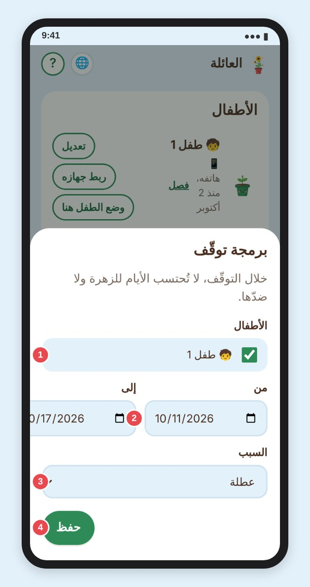
- العائلة، قسم عطلات أو مرض، ثم برمجة توقّف.
- الأطفال (1): حدّدوا الطفل أو الأطفال المعنيين.
- من وإلى (2): أول يوم وآخر يوم مشمولان. يجب أن تكون النهاية بعد البداية.
- السبب (3): عطلة أو مرض أو أخرى.
- حفظ (4).
يظهر التوقّف بعد ذلك في قائمة القسم، مع الطفل والسبب والتواريخ. حذف يلغيه: تُحتسب الأيام المعنية بشكل عادي من جديد. يمكن برمجة التوقّف مسبقًا أو تسجيله لاحقًا، مثلًا بعد التعافي من مرض.
4 من جهة الطفل
يعرض هذا الجزء ما يراه الطفل على هاتفه أو في وضع الطفل (الجزء 2د). اقرؤوه معه في المرة الأولى. تُخاطب شاشات الطفل بصيغة «نحن» («أنشطتنا»، «حديقتنا»).
| التبويب | ما يفعله فيه |
|---|---|
| أنشطتنا | يحدّد ما أنجزه ويشغّل تحدّيًا مؤقّتًا. |
| المكافآت | يرى ما يمكنه الحصول عليه وكم ينقصه. |
| حديقتنا | يتابع زهرته وحوض الفصل وحديقة السنة. |
| الأوسمة | يرى أوسمته المكتسبة والتالية. |
لا يمكن للطفل تعديل أي شيء: لا الأنشطة ولا الأسعار ولا النجوم المكسورة. القفل في الأعلى خاص بالوالدين.
أنشطتنا
تعرض شاشة الافتتاح أنشطة اليوم مرتّبة حسب الوقت: الاستثنائية، الصباح، النهار، المساء.
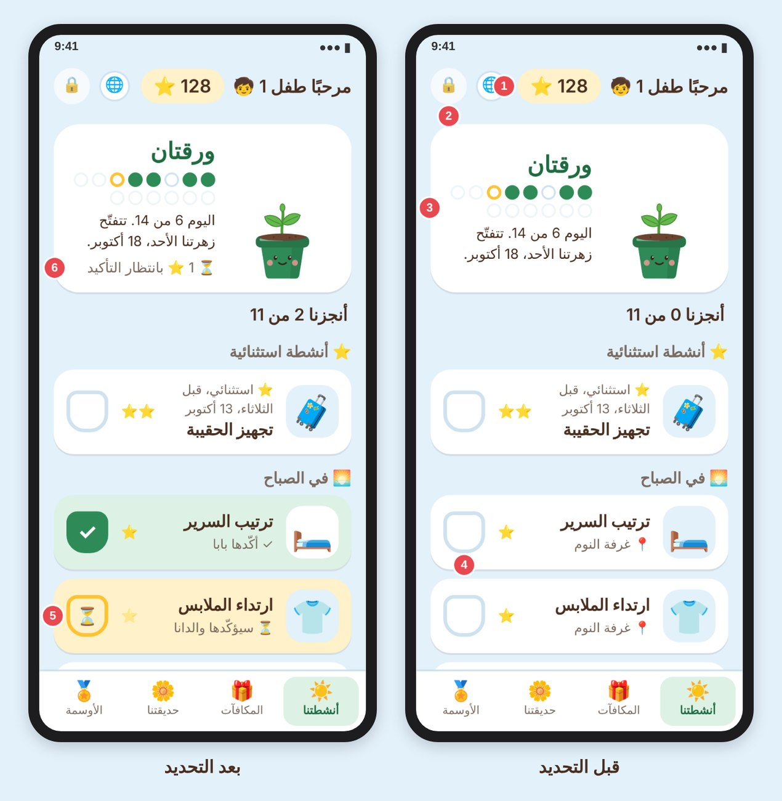
- النجوم القابلة للإنفاق.
- القفل: خاص بالوالدين (رمز الوالدين أو عملية حسابية صغيرة).
- الزهرة الحالية: مرحلتها، ودائرة لكل يوم، وتاريخ تفتّحها.
- خانة التحديد: يلمسها الطفل حين ينجز النشاط.
- يصبح النشاط أصفر مع ساعة رملية: «سيؤكّدها والدانا».
- تظهر النجوم بانتظار التأكيد تحت الزهرة؛ وتنضمّ إلى الرصيد حين يؤكّدها أحد الوالدين.
يمكن للطفل إلغاء التحديد ما دام لم يؤكّده أحد الوالدين. دون إنترنت، تُحفظ التحديدات على الهاتف وتُرسل حالما يعود الاتصال.
التحدّي المؤقّت
يمكن أن يكون للنشاط مؤقّت (يضبطه الوالد في النشاط، الجزء 2ب). يظهر حينها زر أصفر تحدّي X د تحت النشاط.
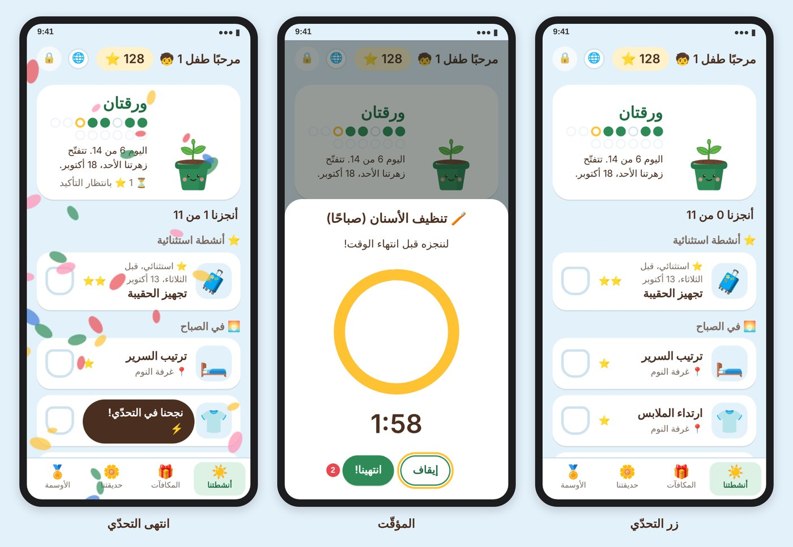
- يلمس الطفل تحدّي 2 د: يبدأ المؤقّت.
- حين ينتهي، يلمس انتهينا!. قبل انتهاء الوقت، تظهر رسالة «نجحنا في التحدّي».
- يُحدَّد النشاط وينتقل إلى التأكيد كالمعتاد.
إيقاف يوقف المؤقّت دون تحديد. التحدّي الناجح لا يمنح نجمة إضافية، لكنه يُحتسب لأوسمة «التحديات»، ويراه الوالد في قسم «بانتظار التأكيد» («تحدٍّ مؤقّت ناجح»).
المكافآت من جهة الطفل
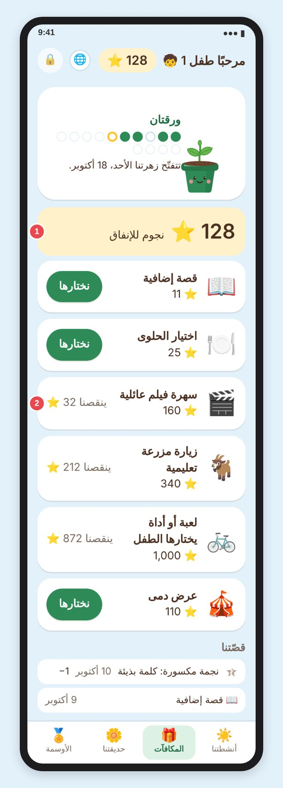
- النجوم القابلة للإنفاق في الأعلى.
- ينقصنا X ⭐: ما ينقص لكل مكافأة. حين تكفي النجوم، يصبح النص زرّ نختارها.
حين يملك الطفل ما يكفي من النجوم:
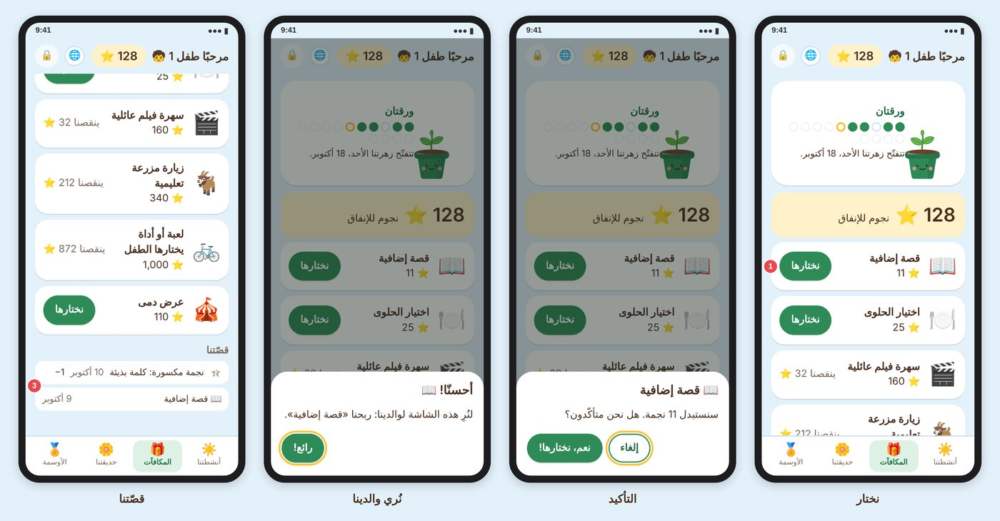
- يلمس نختارها، ثم يؤكّد بـنعم، نختارها!. تُسحب النجوم فورًا.
- تطلب منه شاشة أحسنّا! أن يُري الشاشة لوالديه.
- تُضاف المكافأة إلى قصّتنا (3) أسفل التبويب.
تلزم الإنترنت لهذه الخطوة. يرى الوالد الاستبدال في سجلّ تبويب المكافآت ويمكنه إلغاؤه عند الحاجة (الجزء 3).
حديقتنا والإعدادات
تُظهر الحديقة الطريق الذي قُطع، أبعد من الزهرة الحالية.
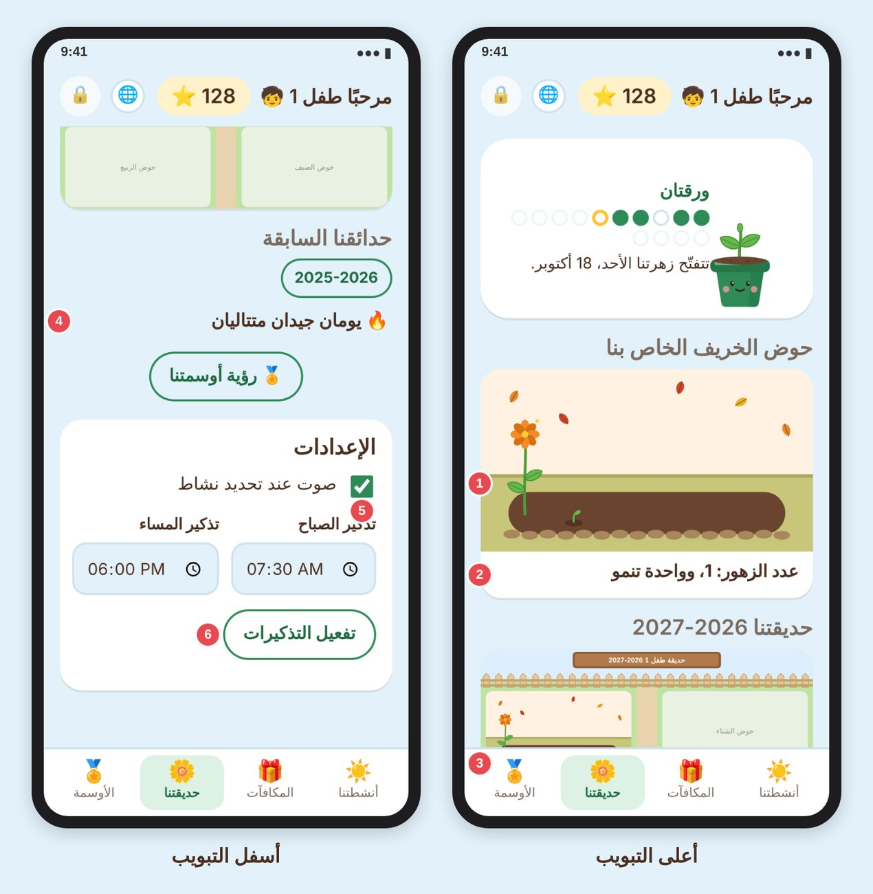
- حوض الفصل: زهور الفصل، زهرة كل أسبوعين.
- العدّاد: الزهور المكتملة والزهرة التي تنمو.
- حديقة السنة: أربعة أحواض، من الخريف إلى الصيف. تتغيّر السنة في 23 سبتمبر.
- السلسلة: عدد الأيام الجيدة المتتالية.
- الصوت عند تحديد نشاط: يمكن إيقافه.
- التذكيرات صباحًا ومساءً: اختاروا الأوقات ثم تفعيل التذكيرات، واقبلوا الإشعارات.
| الزهرة | نسبة الأيام الجيدة في الفترة |
|---|---|
| زهرة كبيرة | 90% أو أكثر |
| زهرة جميلة | 65% أو أكثر |
| زهرة صغيرة | 35% أو أكثر |
| برعم جميل | أقل من 35% |
اليوم الجيد = 75% على الأقل من نجوم اليوم المبرمجة مؤكَّدة. الأيام بلا أنشطة أو في توقّف لا تُحتسب لها ولا ضدّها. تدوم كل فترة من أول يوم إلى آخر يوم في أسبوع العائلة، أي أسبوعين.
الأوسمة
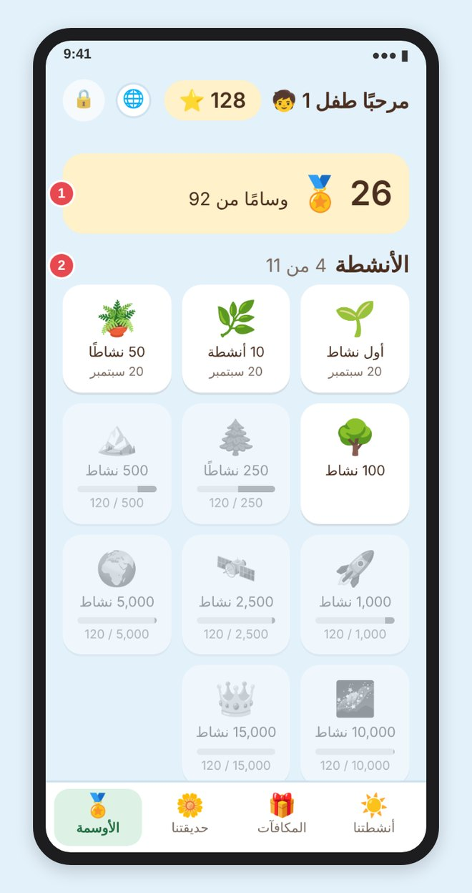
- المجموع: الأوسمة المكتسبة من بين 92.
- الفئات: تعرض كل فئة تقدّمها.
الوسام المكتسب ملوّن مع تاريخه. الأوسمة الأخرى باهتة مع شريط تقدّم (0 / 10، 0 / 50…). تذهب المراحل بعيدًا، حتى 15000 نشاط، لتدوم سنوات. النجوم المكسورة لا تسحب أي وسام أبدًا. وسامَا «أسبوع مثالي» و«عطلة مثالية» يتبعان أسبوع العائلة وأيام عطلتها.
5 الإعدادات
الإعدادات في أسفل تبويب العائلة. هي خاصة بوليّ الأمر. بعضها لكل العائلة، وبعضها للهاتف الذي تضبطونه عليه فقط:
| الإعداد | النطاق |
|---|---|
| الأسبوع والمنطقة الزمنية | كل العائلة |
| التأكيد التلقائي | كل العائلة |
| التذكيرات | هذا الهاتف (يفعّل كل والد تذكيراته) |
| اللغة | هذا الهاتف |
| جدول للطباعة | كل العائلة |
| رمز الوالدين | هذا الهاتف |
| النسخ الاحتياطي | كل العائلة |
| اسم العائلة | كل العائلة |
الأسبوع والمنطقة الزمنية
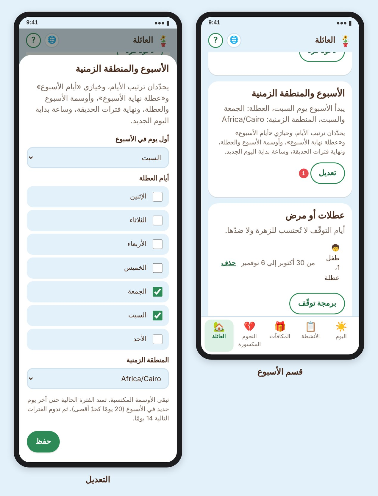
- تعديل يفتح النافذة نفسها كما عند الإنشاء (الجزء 1).
تبقى الأوسمة المكتسبة. إن غيّرتم أول يوم في الأسبوع، تمتد الفترة الحالية حتى آخر يوم جديد في الأسبوع (20 يومًا كحدّ أقصى)، ثم تدوم الفترات التالية 14 يومًا.
التأكيد التلقائي عند منتصف الليل
حين يحدّد الطفل نشاطًا، تنتظر نجومه تأكيدكم. يحدّد هذا الإعداد ما يحدث إن لم يؤكّد أحد خلال اليوم.
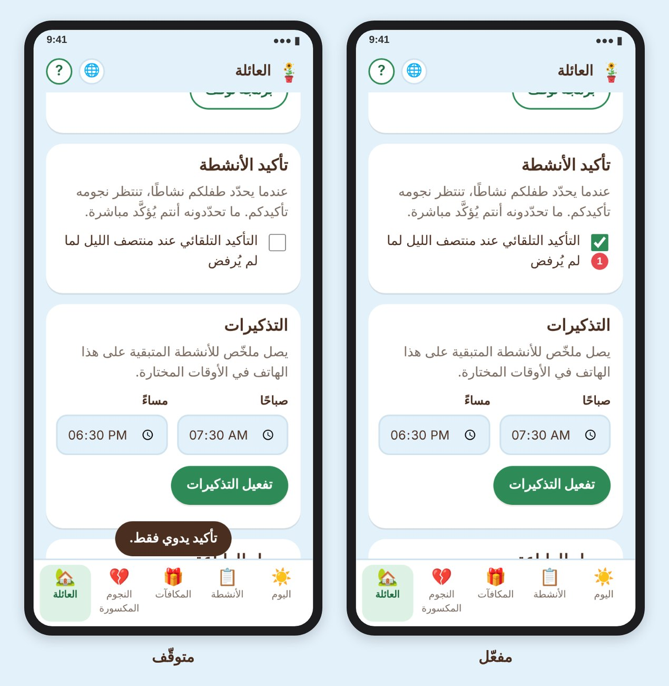
| الخانة (1) | عند منتصف الليل، ما بقي بانتظار التأكيد… |
|---|---|
| محدّدة (افتراضيًا) | يُؤكَّد تلقائيًا. لا يُعاقَب الطفل على نسيان الوالدين. |
| غير محدّدة | يبقى منتظرًا حتى قراركم. الرسالة: «تأكيد يدوي فقط». |
في الحالتين، ما تحدّدونه أنتم يُؤكَّد فورًا. نصيحة: اتركوا الخانة محدّدة إلا إذا أردتم مراقبة كل نشاط.
التذكيرات
في الأوقات المختارة، يلخّص إشعار الأنشطة المتبقية، بلغة هذا الهاتف. يفعّلها كل والد على هاتفه؛ وللطفل تذكيراته في «حديقتنا» (الجزء 4).
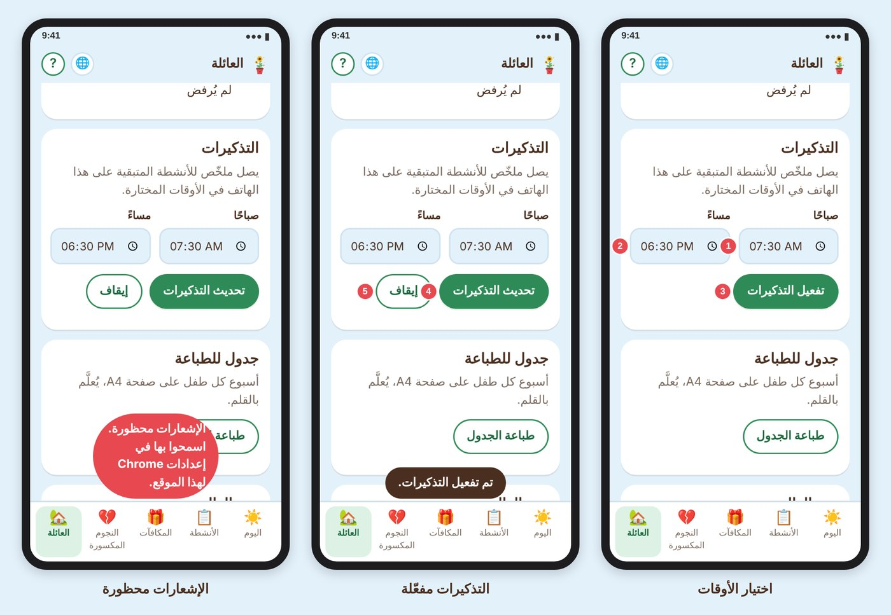
- صباحًا: وقت التذكير الأول.
- مساءً: وقت الثاني.
- تفعيل التذكيرات، ثم سماح حين يطلب Chrome الإذن بإرسال الإشعارات.
- تحديث التذكيرات: بعد تغيير وقت.
- إيقاف: يوقف التذكيرات على هذا الهاتف.
إن أجبتم «عدم السماح»، يعرض التطبيق «الإشعارات محظورة». للتصحيح: في Chrome، المسوا القفل يسار العنوان، ثم الأذونات، ثم الإشعارات على سماح. ثم عودوا إلى «تفعيل التذكيرات».
جدول للطباعة
للثلاجة أو لطفل بلا هاتف: الأسبوع الحالي على صفحة A4، يُعلَّم بالقلم.
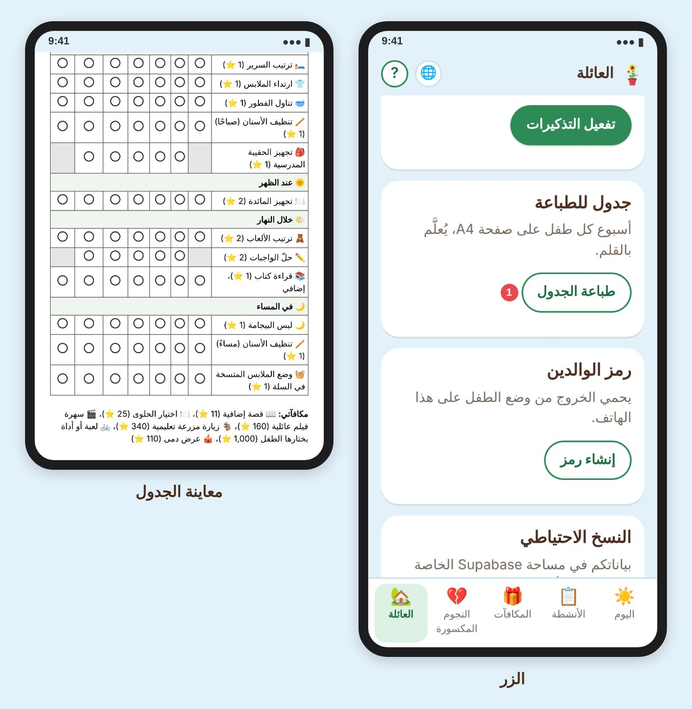
- المسوا طباعة الجدول (1). مع عدة أطفال، اختاروا من تريدون طباعة جدوله.
- يفتح أندرويد معاينة الطباعة: اختاروا طابعتكم، أو الحفظ بتنسيق PDF لإرساله.
تعرض الصفحة الأنشطة حسب الوقت، مع دائرة لكل يوم مبرمج (الخانات الرمادية أيام بلا هذا النشاط)، بدءًا من أول يوم في أسبوع العائلة، وتسرد المكافآت بأسعارها في الأسفل. العلامات على الورق لا تنتقل إلى التطبيق: يجب نقلها من شاشة اليوم (حتى 6 أيام إلى الوراء).
رمز الوالدين والنسخ الاحتياطي والحساب
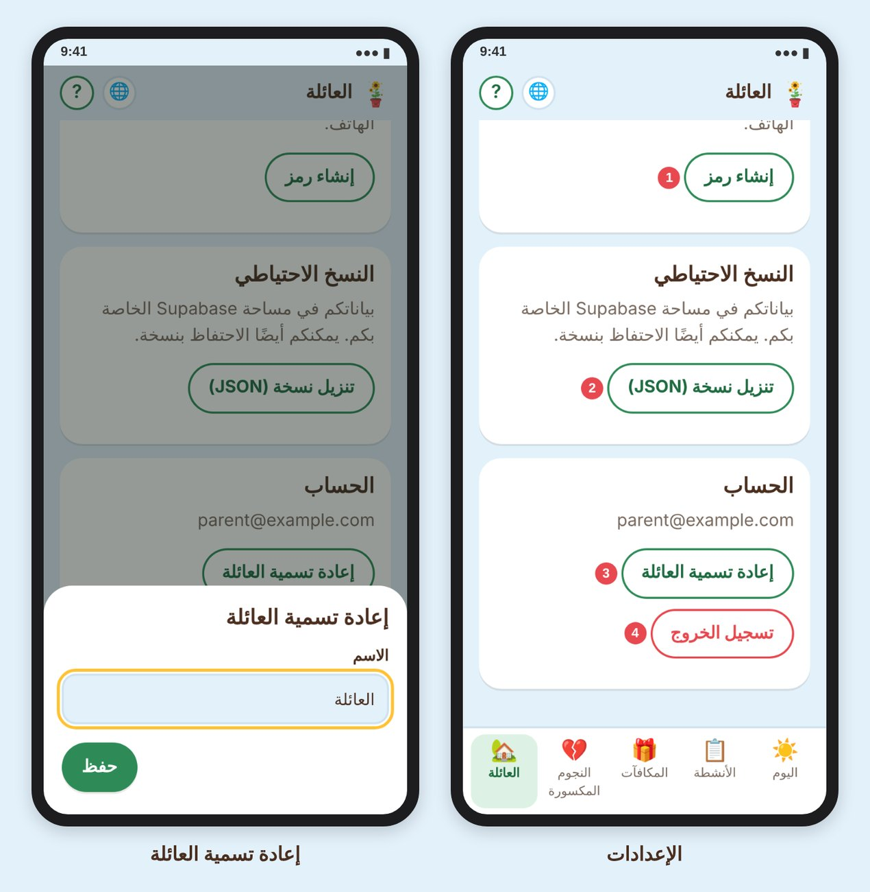
- رمز الوالدين: تغيير الرمز، ثم 4 أرقام. يحمي الخروج من وضع الطفل على هذا الهاتف (الجزء 2د). دون رمز، يطرح التطبيق عملية حسابية صغيرة بدلًا منه.
- تنزيل نسخة (JSON): ملف بكل بيانات العائلة (الأطفال، الأنشطة، النجوم، المكافآت، النجوم المكسورة، الأوسمة، الزهور، التوقّفات)، يُحفظ في التنزيلات. مفيد مرة كل ثلاثة أشهر للاحتياط.
- إعادة تسمية العائلة: يغيّر الاسم المعروض أعلى التطبيق لكل الأفراد.
- تسجيل الخروج: يغلق حسابكم على هذا الهاتف. تبقى البيانات على الإنترنت؛ ويكفي تسجيل الدخول من جديد بالبريد الإلكتروني وكلمة المرور.
يُذكَّر بالبريد الإلكتروني للحساب فوق الأزرار.